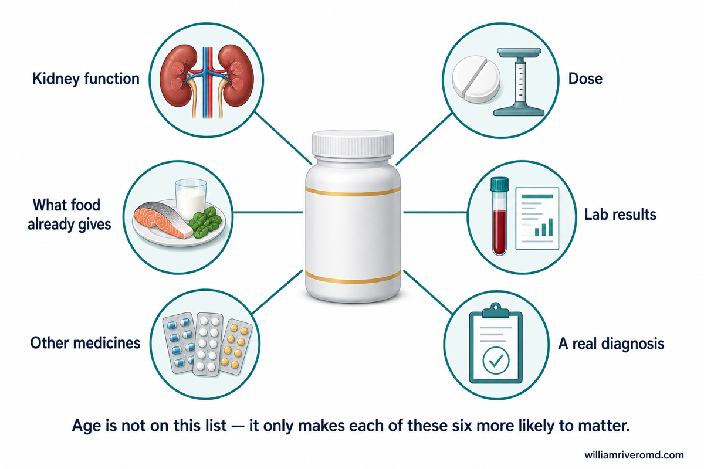
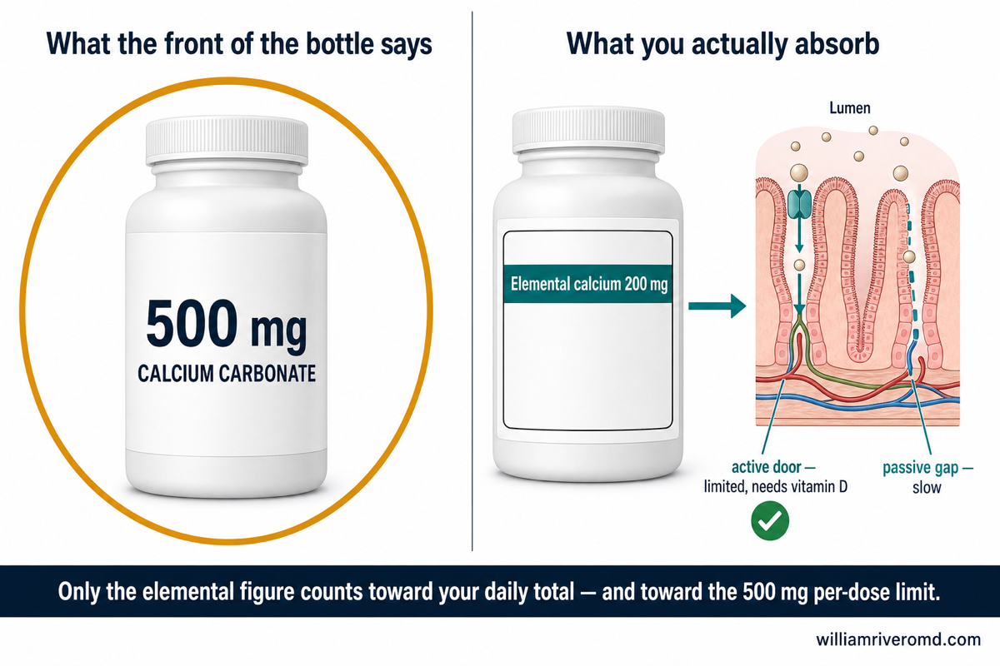
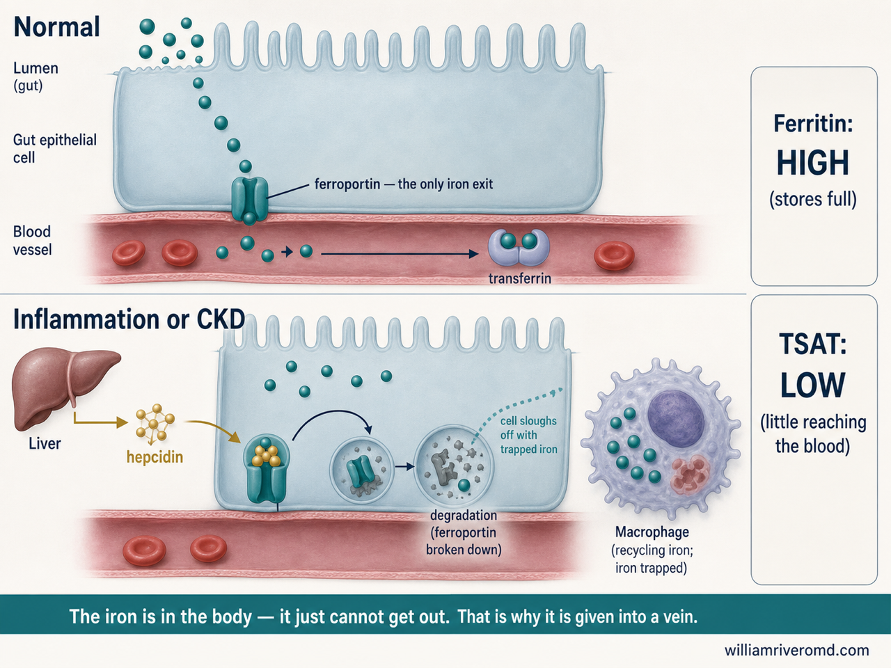
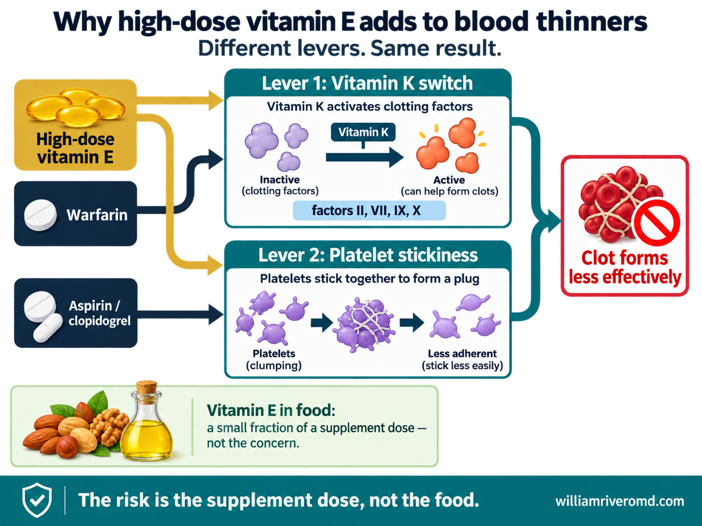
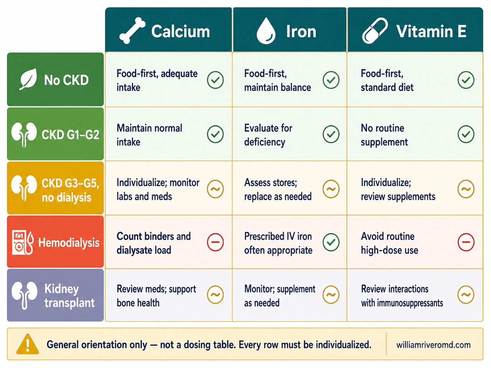
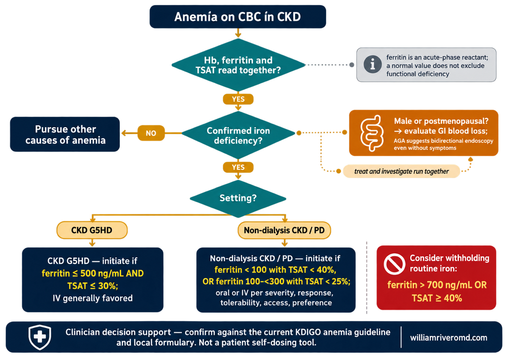

Three bottles, one honest question.Tatlong bote, isang tapat na tanong.Tulo ka botelya, usa ka tinuod nga pangutana.Atlung bote, metung a tapat a kutang.
When an older Filipino patient empties a bag of medicines onto my table, three bottles appear more often than any others: calcium, iron, and vitamin E. They are cheap, sold without a prescription, and given as gifts by well-meaning children. And more often than not, when I ask why the bottle is there, nobody can name a reason. Kapag ibinubuhos ng isang matandang Pilipinong pasyente ang isang bag ng gamot sa aking mesa, tatlong bote ang mas madalas lumitaw kaysa sa iba: calcium, iron, at vitamin E. Mura ang mga ito, binebenta nang walang reseta, at ibinibigay bilang regalo ng mga anak na may mabuting hangarin. At mas madalas kaysa hindi, kapag itinanong ko kung bakit nandiyan ang bote, walang makapagsabi ng dahilan. Kon ang usa ka tigulang nga Pilipinong pasyente mobubo sa usa ka bag nga tambal sa akong lamesa, tulo ka botelya ang mas kanunay motungha kaysa uban: calcium, iron, ug vitamin E. Barato kini, gibaligya nga walay reseta, ug gihatag isip gasa sa mga anak nga maayo og tuyo. Ug mas kanunay, kon mangutana ko nganong naa ang botelya, walay makahatag og rason. Nung ing metung a matuang pasyenteng Pilipinu ibuldak na ing bag da reng gamut king kakung lamesa, atlung bote ing mas pilan a lumitaw kesa kareng aliwa: calcium, iron, ampo vitamin E. Mura la, pisali lang alang reseta, at bibie lang regalu da reng anak a maganang kaisipan. At mas pilan kesa ali, nung kutang ku nung bakit atyu ing bote, alang makapagsabi nung bakit.
That is the real problem — not age. A supplement is not automatically helpful or harmful. Its safety depends on why it is being taken, the dose, what is already coming from food, your kidney function, your laboratory results, and your other medicines. This guide gives you the six questions that decide all of it, and the warning signs that mean stop and call. Iyan ang tunay na problema — hindi ang edad. Ang isang supplement ay hindi awtomatikong nakakatulong o nakakasama. Ang kaligtasan nito ay nakadepende sa bakit ito iniinom, sa dosis, sa nakukuha na mula sa pagkain, sa iyong kalusugan ng bato, sa iyong resulta ng laboratoryo, at sa iyong ibang gamot. Ibinibigay ng gabay na ito ang anim na tanong na nagpapasya sa lahat ng iyon, at ang mga babalang senyales na ibig sabihin ay tumigil at tumawag. Kana ang tinuod nga problema — dili ang edad. Ang usa ka supplement dili awtomatikong makatabang o makadaut. Ang kaluwasan niini nagdepende sa nganong gi-inom kini, sa dosis, sa nakuha na gikan sa pagkaon, sa imong kahimsog sa kidney, sa imong resulta sa laboratoryo, ug sa imong ubang tambal. Kini nga giya naghatag sa unom ka pangutana nga magdesisyon niini tanan, ug ang mga timailhan nga pasabot hunong ug tawag. Ita ing tune a problema — ali ing edad. Ing metung a supplement ali ya awtomatikung makatulung o makasama. Ing kaligtasan na depende ya king bakit ya inuman, king dosis, king akakua na king pamangan, king kekang kaugnayan da reng bato, king kekang resulta ning laboratoryo, ampo kareng kekang aliwang gamut. Ining giya bibie na la reng anam a kutang a maglaso kareti ngan, ampo reng senyas a ibat na kaya tumuknang ka at ausan me ing doktor.
Do not stop a prescribed supplement on your ownHuwag ihinto ang inirerisetang supplement nang mag-isaAyaw hunonga ang gireseta nga supplement nga ikaw raE me tuknangan ing supplement a mireseta king sarili mu
If a doctor started your calcium, iron, vitamin D, phosphate binder, osteoporosis treatment, or blood-thinning medicine, it is probably there for a reason. Use this guide to prepare for a medication review — not to stop treatment. Bring the bottles; decide together. Kung may doktor na nagsimula ng iyong calcium, iron, vitamin D, phosphate binder, gamot sa osteoporosis, o pampanipis ng dugo, malamang may dahilan iyon. Gamitin ang gabay na ito upang maghanda para sa pagsusuri ng gamot — hindi upang ihinto ang paggamot. Dalhin ang mga bote; magpasya nang magkasama. Kon dunay doktor nga nagsugod sa imong calcium, iron, vitamin D, phosphate binder, tambal sa osteoporosis, o pangpanipis sa dugo, tingali naa kanay rason. Gamita kini nga giya aron mangandam sa pagsusi sa tambal — dili aron hunongon ang tambal. Dad-a ang mga botelya; magdesisyon nga magkuyog. Nung atin doktor a mengumpisa king kekang calcium, iron, vitamin D, phosphate binder, gamut king osteoporosis, o pampanipis ning daya, mesalese yang atin dahilan. Gamitan me ining giya bang maghanda king pamanigaral da reng gamut — ali bang tuknangan ing lulan. Dalan mu la reng bote; maglaso kayung adua.
65 is not an on–off switch.Ang 65 ay hindi isang switch na on–off.Ang 65 dili usa ka switch nga on–off.Ing 65 ali yang switch a on–off.
You may have seen a video warning that calcium, iron, and vitamin E "become dangerous after 65." No guideline says that. Nothing changes chemically on a birthday. What actually changes is that the conditions which make these supplements risky — chronic kidney disease, osteoporosis treatment, cancer, bleeding in the gut, taking many medicines at once, and blood thinners — all become far more common with age. Maaaring nakakita ka ng video na nagbabala na ang calcium, iron, at vitamin E ay "nagiging delikado pagkatapos ng 65." Walang gabay na nagsasabi niyan. Walang nagbabago sa kemikal sa isang kaarawan. Ang talagang nagbabago ay ang mga kondisyong nagpapadelikado sa mga supplement na ito — malalang sakit sa bato, gamot sa osteoporosis, kanser, pagdurugo sa bituka, pag-inom ng maraming gamot nang sabay, at pampanipis ng dugo — na lahat ay nagiging mas karaniwan habang tumatanda. Tingali nakakita ka og video nga nagpasidaan nga ang calcium, iron, ug vitamin E "mahimong delikado human sa 65." Walay giya nga nag-ingon niana. Walay mausab sa kemikal sa usa ka adlaw nga natawhan. Ang tinuod nga mausab mao nga ang mga kondisyon nga naghimo niini nga mga supplement nga makuyaw — grabe nga sakit sa kidney, tambal sa osteoporosis, kanser, pagdugo sa tinai, pag-inom og daghang tambal, ug pangpanipis sa dugo — nga tanan mahimong mas komon inig katigulang. Malyaring mekakit kang video a magbabala na ing calcium, iron, ampo vitamin E "maging delikadu la kaybat ning 65." Alang giya a magsabi kanita. Alang malilit king kemikal king metung a kebaitan. Ing tune a malilit ila reng kondisyon a maglagyu kareng supplement a reti a delikadu — makanwan a sakit da reng bato, gamut king osteoporosis, kanser, pamagdugu king bitukâ, pamanginum dakal a gamut a mididinan, ampo pampanipis ning daya — a sablang maging mas karaniwan nung tumua ka.
So age is a risk marker, not a contraindication. The right question is not "Am I too old for this?" It is: "Do I have a reason to take this, and is this dose safe for my kidneys and my other medicines?" Kaya ang edad ay isang palatandaan ng panganib, hindi isang kontraindikasyon. Ang tamang tanong ay hindi "Masyado na ba akong matanda para dito?" Ito ay: "May dahilan ba ako para inumin ito, at ligtas ba ang dosis na ito para sa aking bato at sa iba kong gamot?" Busa ang edad usa ka timailhan sa risgo, dili usa ka kontraindikasyon. Ang husto nga pangutana dili "Tigulang na ba kaayo ko para niini?" Kini: "Aduna ba koy rason sa pag-inom niini, ug luwas ba kini nga dosis para sa akong kidney ug sa akong ubang tambal?" Kanita ing edad metung yang tanda ning peligru, ali yang kontraindikasyon. Ing tamang kutang ali ya "Matua naku pin para kaniti?" Ini ya: "Atin kung dahilan bang inuman ke ini, at ligtas ya pin ining dosis para kareng kakung bato ampo kareng aliwa kung gamut?"

Six things decide whether a supplement is safe for you — kidney function, the dose, what your food already provides, your laboratory results, your other medicines, and whether you actually have the diagnosis it treats. Age is not on the list; it simply makes each of these six more likely to matter.
- eGFR
- Estimated glomerular filtration rate — a number that estimates how well the kidneys filter.
- CKD
- Chronic kidney disease.
Six questions before the first dose.Anim na tanong bago ang unang dosis.Unom ka pangutana sa dili pa ang unang dosis.Anam a kutang bayu ing mumunang dosis.
-
Why am I taking it?Bakit ko ito iniinom?Nganong gi-inom nako kini?Bakit ke inuman ini?
A diagnosed deficiency, a prescribed treatment, or only a vague promise on the label? "For strength" is not an indication.Isang na-diagnose na kakulangan, isang inireresetang paggamot, o isang malabong pangako lamang sa label? Ang "pampalakas" ay hindi indikasyon.Usa ka na-diagnose nga kakulang, usa ka gireseta nga tambal, o usa lang ka hanap nga saad sa label? Ang "pampakusog" dili indikasyon.Metung a mikilalang kakulangan, metung a mirisetang lulan, o metung mung malabung pangaku king label? Ing "pampalakas" ali yang indikasyon.
-
What is the exact dose?Ano ang eksaktong dosis?Unsa ang eksaktong dosis?Nanu ing eksaktung dosis?
Read elemental calcium and elemental iron — not the weight of the whole tablet. For vitamin E, read the IU or mg.Basahin ang elemental na calcium at elemental na iron — hindi ang bigat ng buong tableta. Para sa vitamin E, basahin ang IU o mg.Basaha ang elemental nga calcium ug elemental nga iron — dili ang gibug-aton sa tibuok tableta. Para sa vitamin E, basaha ang IU o mg.Basan me ing elemental a calcium ampo ing elemental a iron — ali ing bayat ning mabilug a tableta. Para king vitamin E, basan me ing IU o mg.
-
How much am I already getting?Magkano na ang nakukuha ko?Pila na ang nakuha nako?Magkanu na ing akakua ku?
Add up food plus every other product — multivitamins, antacids, fortified milk drinks, and phosphate binders all contain these nutrients. Doubling up is the most common error I see.Idagdag ang pagkain at bawat ibang produkto — ang mga multivitamin, antacid, fortified na inuming gatas, at phosphate binder ay naglalaman lahat ng mga sustansyang ito. Ang pagdodoble ang pinakakaraniwang pagkakamali na nakikita ko.Idugang ang pagkaon ug matag ubang produkto — ang mga multivitamin, antacid, fortified nga ilimnong gatas, ug phosphate binder tanan adunay kini nga mga sustansya. Ang pagdoble mao ang labing komon nga sayop nga akong nakita.Idagdag me ing pamangan ampo ing balang aliwang produktu — deng multivitamin, antacid, fortified a inuman a gatas, ampo phosphate binder atin lang sablang sustansya reti. Ing pamagdoble ing pekamakaraniwan a kamalian a akakit ku.
-
What do my kidneys and labs show?Ano ang ipinapakita ng aking bato at mga lab?Unsa ang gipakita sa akong kidney ug mga lab?Nanu ing pakit da reng kakung bato ampo reng lab?
eGFR, calcium, phosphate, PTH, hemoglobin, ferritin, and TSAT — whichever apply. Without these numbers, a supplement decision is a guess.eGFR, calcium, phosphate, PTH, hemoglobin, ferritin, at TSAT — alinman ang naaangkop. Kung wala ang mga numerong ito, ang desisyon sa supplement ay hula lamang.eGFR, calcium, phosphate, PTH, hemoglobin, ferritin, ug TSAT — bisan unsa ang angay. Kon walay kini nga mga numero, ang desisyon sa supplement usa ka pagtag-an.eGFR, calcium, phosphate, PTH, hemoglobin, ferritin, ampo TSAT — nanuman ing angkop. Nung alang deting numeru, ing desisyon king supplement metung yang panenermat.
-
What can it interact with?Ano ang maaari nitong ma-interact?Unsa ang mahimo niining ma-interact?Nanu ing malyaring ma-interact na?
Blood thinners and antiplatelets, levothyroxine, levodopa, quinolone antibiotics, dolutegravir, lithium, and some osteoporosis treatments. Ask the pharmacist about spacing.Mga pampanipis ng dugo at antiplatelet, levothyroxine, levodopa, quinolone na antibiotic, dolutegravir, lithium, at ilang gamot sa osteoporosis. Magtanong sa parmasyutiko tungkol sa pagitan ng pag-inom.Mga pangpanipis sa dugo ug antiplatelet, levothyroxine, levodopa, quinolone nga antibiotic, dolutegravir, lithium, ug pipila ka tambal sa osteoporosis. Pangutana sa parmasyutiko bahin sa gilay-on sa pag-inom.Deng pampanipis ning daya ampo antiplatelet, levothyroxine, levodopa, quinolone a antibiotic, dolutegravir, lithium, ampo mapilan a gamut king osteoporosis. Kutang me king parmasyutiku ing pilatan ning pamanginum.
-
How will we know if it is working?Paano natin malalaman kung gumagana ito?Unsaon nato pagkahibalo kon molihok kini?Makananu tamung abalu nung gagana ya?
Agree on a repeat test and a review date before starting. A supplement with no end date and no follow-up test is the definition of overuse.Magkasundo sa pag-uulit ng test at petsa ng pagsusuri bago magsimula. Ang supplement na walang katapusang petsa at walang follow-up na test ay ang mismong kahulugan ng sobrang paggamit.Magkauyon sa pagsubli sa test ug petsa sa pagsusi sa dili pa magsugod. Ang supplement nga walay katapusan nga petsa ug walay follow-up nga test mao ang kahulugan sa sobra nga paggamit.Magkasundu kayu king pamangulit ning test ampo petsa ning pamanigaral bayu mangumpisa. Ing supplement a alang angganan a petsa at alang follow-up a test iya ing kabaldugan ning sobrang pamangamit.
Calcium: essential mineral, not an automatic bone treatment.Calcium: mahalagang mineral, hindi awtomatikong gamot sa buto.Calcium: importante nga mineral, dili awtomatikong tambal sa bukog.Calcium: mahalagang mineral, ali yang awtomatikung gamut king butul.
Calcium is essential — but the goal is enough, not "as much as possible." Food is the preferred source. A supplement exists to fill a measured shortfall, and that is the part most people skip: nobody measured the shortfall. Mahalaga ang calcium — ngunit ang layunin ay sapat, hindi "hangga't marami." Ang pagkain ang mas gustong pinagkukunan. Ang supplement ay para punan ang nasukat na kakulangan, at iyan ang bahaging nilalaktawan ng karamihan: walang sumukat sa kakulangan. Importante ang calcium — apan ang tumong igo, dili "kutob sa madaghan." Ang pagkaon mao ang gipalabi nga tinubdan. Ang supplement alang sa pagpuno sa nasukod nga kakulang, ug kana ang bahin nga gilaktawan sa kadaghanan: walay misukod sa kakulang. Mahalaga ya ing calcium — dapot ing tudyu sapat, ali "makanung dakal." Ing pamangan ing mas maganang pikuanan. Ing supplement atyu ya bang tumpan ing mesukat a kakulangan, at ita ing dake a lalaktawan da reng dakal: alang menukat king kakulangan.
How much is generally recommended?Magkano ang karaniwang inirerekomenda?Pila ang kasagarang girekomenda?Magkanu ing karaniwan a irekomenda?
| GroupPangkatGrupoGrupu | Total calcium per day — food plus supplementsKabuuang calcium bawat araw — pagkain kasama ang supplementKinatibuk-ang calcium matag adlaw — pagkaon lakip ang supplementMabilug a calcium balang aldo — pamangan ampo reng supplement |
|---|---|
| Men 50–70Lalaki 50–70Lalaki 50–70Lalaki 50–70 | 1,000 mg |
| Women 51 and olderBabae 51 pataasBabaye 51 pataasBabai 51 paitas | 1,200 mg |
| Men 71 and olderLalaki 71 pataasLalaki 71 pataasLalaki 71 paitas | 1,200 mg |
Your own target may differ if you have CKD, kidney stones, a high blood calcium level, malabsorption, or are on osteoporosis treatment. Note that these are totals — if your meals already provide 700 mg, a 1,000 mg tablet does not fill a gap; it creates an excess. Maaaring iba ang iyong target kung may CKD ka, bato sa bato, mataas na calcium sa dugo, malabsorption, o gumagamot sa osteoporosis. Tandaan na kabuuan ito — kung ang iyong pagkain ay nagbibigay na ng 700 mg, ang 1,000 mg na tableta ay hindi pumupuno ng puwang; gumagawa ito ng sobra. Mahimong lahi ang imong target kon aduna kay CKD, bato sa kidney, taas nga calcium sa dugo, malabsorption, o nagtambal sa osteoporosis. Timan-i nga kinatibuk-an kini — kon ang imong pagkaon naghatag na og 700 mg, ang 1,000 mg nga tableta wala magpuno og luna; naghimo kini og sobra. Malyaring aliwa ing kekang target nung atin kang CKD, batu king bato, matas a calcium king daya, malabsorption, o gagamut king osteoporosis. Tandanan mu na mabilug la reti — nung ing kekang pamangan bibie ne ing 700 mg, ing 1,000 mg a tableta ali ya tutumpan king puang; gagawa yang sobra.
Food firstPagkain munaPagkaon unaPamangan mumuna
Food first Milk or a calcium-fortified unsweetened drink, yogurt, calcium-set tofu, and small fish eaten with the bones — dilis and sardines — are reliable Filipino sources. Sesame and almonds help in sensible portions. Two cautions: small dried fish and canned sardines carry a real sodium load, so watch the salt if you have high blood pressure or CKD; and not all leafy vegetables are equal, because oxalate in some greens binds calcium and blocks its absorption. Pagkain muna Ang gatas o fortified na walang asukal na inumin, yogurt, tofu na may calcium, at maliliit na isdang kinakain kasama ang tinik — dilis at sardinas — ay maaasahang pinagkukunan ng Pilipino. Nakakatulong ang linga at almonds sa tamang dami. Dalawang babala: ang tuyong dilis at de-latang sardinas ay may tunay na sodium, kaya bantayan ang asin kung may altapresyon o CKD; at hindi pantay-pantay ang mga madahong gulay, dahil ang oxalate sa ilan ay humahawak sa calcium at humahadlang sa pagsipsip nito. Pagkaon una Ang gatas o fortified nga walay asukar nga ilimnon, yogurt, tofu nga adunay calcium, ug gagmayng isda nga gikaon uban ang bukog — dilis ug sardinas — kasaligan nga tinubdan sa Pilipino. Makatabang ang linga ug almonds sa husto nga gidaghanon. Duha ka pasidaan: ang uga nga dilis ug de-lata nga sardinas adunay tinuod nga sodium, busa bantayi ang asin kon adunay taas nga presyon o CKD; ug dili managsama ang mga dahonon nga utanon, kay ang oxalate sa uban naggunit sa calcium ug nagbabag sa pagsuyop. Pamangan mumuna Ing gatas o fortified a alang asukal a inuman, yogurt, tofu a atin calcium, ampo reng malating asan a pengan lupa reng tinik — dilis ampo sardinas — maasahan lang pikuanan da reng Pilipinu. Makatulung la ing linga ampo almonds king tamang dakal. Aduang babala: ing mangang dilis ampo de-latang sardinas atin lang tune a sodium, kanita banten me ing asin nung atin kang altapresyon o CKD; at ali la mipapante reng gulay a madaun, uling ing oxalate kareng mapilan tatalan ne ing calcium at sasablay king pamanyipsip.
If a supplement really is neededKung talagang kailangan ang supplementKon tinuod nga gikinahanglan ang supplementNung tune a kailangan ing supplement
There is a reason the advice is "500 mg at a time" rather than "take it all at once." Calcium enters the body through two doors in the gut wall. The first is an active door that grabs calcium and carries it across — it needs vitamin D to work, and like any door with a limited number of handlers, it can only move so much at once. The second is a passive gap that calcium drifts through on its own, and it is far less efficient. At small doses, the active door does most of the work and you absorb a high proportion. Push more calcium in at one time and that door saturates; the extra has to rely on the slow passive route. So a 1,000 mg tablet does not deliver twice what a 500 mg tablet delivers — most of the surplus stays in the bowel, where it causes the bloating and constipation people complain about. Splitting the dose is not fussiness; it is working with how the gut is built. May dahilan kung bakit ang payo ay "500 mg bawat inom" sa halip na "inumin lahat nang sabay." Dalawang pinto ang dinaraanan ng calcium sa bituka. Ang una ay aktibong pinto na humahawak at nagdadala ng calcium — kailangan nito ng vitamin D, at tulad ng anumang pintong may kaunting tagahawak, may hangganan ang kayang dalhin. Ang pangalawa ay puwang na dinadaanan ng calcium nang kusa, at mas mabagal ito. Sa maliit na dosis, ang aktibong pinto ang gumagawa ng halos lahat at mataas ang nasisipsip. Kapag sinobrahan mo, napupuno ang pintong iyon; ang labis ay umaasa na lang sa mabagal na daan. Kaya ang 1,000 mg na tableta ay hindi doble ang naibibigay kaysa 500 mg — ang sobra ay nananatili sa bituka at doon nagmumula ang kabag at tibi. Ang paghahati ng dosis ay hindi pagiging maselan; ito ay pagsunod sa hugis ng katawan. Adunay rason nganong ang tambag "500 mg matag inom" imbes "imna tanan nga dungan." Duha ka pultahan ang agian sa calcium sa tinai. Ang una usa ka aktibo nga pultahan nga naggunit ug nagdala sa calcium — nagkinahanglan kini og vitamin D, ug sama sa bisan unsang pultahan nga gamay ra ang tigdala, adunay kinutoban ang madala niini. Ang ikaduha usa ka luna nga giagian sa calcium sa kaugalingon, ug mas hinay kini. Sa gagmayng dosis, ang aktibo nga pultahan ang naghimo sa kadaghanan ug taas ang masuyop. Kon sobrahan nimo, mapuno kanang pultahana; ang sobra mosalig na lang sa hinay nga agianan. Busa ang 1,000 mg nga tableta dili doble ang gihatag kaysa 500 mg — ang sobra magpabilin sa tinai ug didto gikan ang hangin ug constipation. Ang pagbahin sa dosis dili pagkamapili; kini pagsunod sa porma sa lawas. Atin dahilan nung bakit ing payu "500 mg balang inum" imbes "inuman mo ngan a mididinan." Aduang pasbul ing daralanan ning calcium king bitukâ. Ing mumuna metung yang aktibung pasbul a tatalan at magdala king calcium — kailangan na ing vitamin D, at anti ning nanumang pasbul a ditak ing magdala, atin yang angganan. Ing kaduwa metung yang puang a daralanan ning calcium king sarili na, at mas marimla ya. King malating dosis, ing aktibung pasbul ing gagawa king kalakalan at matas ing masipsip. Nung sobran me, mitmu ya ing pasbul a ita; ing sobra manalig na mu king marimlang dalan. Kanita ing 1,000 mg a tableta ali ya dubling bibie kesa king 500 mg — ing sobra manatili ya king bitukâ at karin ibat ing kabag ampo tibi. Ing pamirasu king dosis ali yang pamagmaselan; pamanuknangan ya king anyu ning katawan.

The number on the front of the bottle is usually the weight of the calcium salt, not the calcium itself. Only the Supplement Facts panel tells you the elemental calcium — the figure that actually counts toward your daily total and toward the 500 mg per-dose absorption limit.
- mg
- Milligram.
- CaCO₃
- Calcium carbonate — a common calcium salt used in supplements and antacids.
Kidney stonesBato sa batoBato sa kidneyBatu king bato
Food calcium is not the enemyHindi kalaban ang calcium sa pagkainDili kaaway ang calcium sa pagkaonAli yang kalaban ing calcium king pamangan
Normal dietary calcium should not be restricted just to prevent calcium-oxalate stones. Calcium in a meal binds oxalate inside the intestine, so less oxalate reaches the kidney — in a large cohort of women, higher dietary calcium was associated with lower stone risk. Some supplement regimens have been linked to a small increase in stones, notably in the Women's Health Initiative, but trial results are not uniform. If supplemental calcium is prescribed to you and you have formed stones, ask whether to take it with a meal and whether a 24-hour urine study is worthwhile. Ang normal na calcium sa pagkain ay hindi dapat bawasan para lang maiwasan ang calcium-oxalate na bato. Ang calcium sa pagkain ay humahawak sa oxalate sa loob ng bituka, kaya mas kaunting oxalate ang umaabot sa bato — sa isang malaking pag-aaral ng kababaihan, ang mas mataas na calcium sa pagkain ay nauugnay sa mas mababang panganib ng bato. May ilang supplement na naiugnay sa bahagyang pagtaas ng bato, lalo na sa Women's Health Initiative, ngunit hindi pare-pareho ang resulta. Kung may resetang calcium ka at nagkaroon ka na ng bato, itanong kung iinumin ba ito kasama ng pagkain at kung kailangan ang 24-oras na ihi. Ang normal nga calcium sa pagkaon dili angay kunhoran aron lang malikayan ang calcium-oxalate nga bato. Ang calcium sa pagkaon naggunit sa oxalate sulod sa tinai, busa gamay ra ang oxalate nga moabot sa kidney — sa usa ka dako nga pagtuon sa kababayen-an, ang mas taas nga calcium sa pagkaon nalambigit sa mas ubos nga risgo sa bato. Pipila ka supplement nalambigit sa gamay nga pagsaka sa bato, ilabina sa Women's Health Initiative, apan dili managsama ang resulta. Kon adunay gireseta nga calcium ug nakabato ka na, pangutana kon imnon ba kini uban sa pagkaon ug kon kinahanglan ang 24-oras nga ihi. Ing normal a calcium king pamangan ali ya dapat bawasan para mu iwasan ing calcium-oxalate a batu. Ing calcium king pamangan tatalan ne ing oxalate king lalam ning bitukâ, kanita mas ditak a oxalate ing datang king bato — king metung a maragul a pamanigaral kareng babai, ing mas matas a calcium king pamangan mikakawani ya king mas mababang peligru king batu. Atin mapilan a supplement a mikakawani king ditak a pamagtas ning batu, lalu na king Women's Health Initiative, dapot ali la mipapante reng resulta. Nung atin kang mirisetang calcium at mika batu na ka, kutang me nung inuman me lupa ning pamangan at nung kailangan ing 24-oras a ihi.
Heart and arteriesPuso at ugatKasingkasing ug ugatPusu ampo ugat
What we knowAng alam natinAng atong nahibaw-anIng balu tamu
- Calcium from food has not been shown to raise heart-disease risk.Ang calcium mula sa pagkain ay hindi napatunayang nagpapataas ng panganib sa puso.Ang calcium gikan sa pagkaon wala mapamatud-i nga nagpataas sa risgo sa kasingkasing.Ing calcium ibat king pamangan ali ya mepatune a magpatas king peligru king pusu.
- A large systematic review found calcium intake within recommended limits was not associated with cardiovascular risk in generally healthy adults.Natuklasan ng isang malaking systematic review na ang calcium sa loob ng inirerekomendang hangganan ay hindi nauugnay sa panganib sa puso sa malulusog na matatanda.Nakaplagan sa usa ka dako nga systematic review nga ang calcium sulod sa girekomenda nga utlanan wala malambigit sa risgo sa kasingkasing sa himsog nga hamtong.Ikit ning metung a maragul a systematic review na ing calcium king lalam ning irekomendang angganan ali ya mikakawani king peligru king pusu kareng masalese a matua.
- Excessive total intake has no proven benefit and should be avoided.Ang sobrang kabuuang dami ay walang napatunayang benepisyo at dapat iwasan.Ang sobra nga kinatibuk-ang gidaghanon walay napamatud-an nga kaayohan ug angay likayan.Ing sobrang mabilug a dakal alang mepatuneng pakinabang at dapat yang iwasan.
What remains uncertainAng nananatiling hindi tiyakAng nagpabilin nga dili siguradoIng manatiling ali tiyak
- Whether calcium supplements slightly raise cardiovascular events. Some trial meta-analyses report a small increase; others report none.Kung bahagyang nagpapataas ba ng cardiovascular events ang calcium supplement. May mga meta-analysis na nag-uulat ng maliit na pagtaas; ang iba, wala.Kon gamay ba nga nagpataas sa cardiovascular events ang calcium supplement. Adunay meta-analysis nga nagtaho og gamay nga pagsaka; ang uban, wala.Nung ditak yang magpatas kareng cardiovascular events ing calcium supplement. Atin meta-analysis a magbalita ditak a pamagtas; deng aliwa, ala.
- A calcium tablet does not simply travel to an artery and stick there. That is not how vascular calcification works, and no one should be frightened with that image.Ang tableta ng calcium ay hindi basta pumupunta sa ugat at dumidikit doon. Hindi ganoon gumagana ang vascular calcification, at walang dapat takutin ng ganoong larawan.Ang tableta sa calcium dili basta moadto sa ugat ug motapot didto. Dili ingon niana molihok ang vascular calcification, ug walay angay hadlokon sa maong hulagway.Ing tableta ning calcium ali ya basta munta king ugat at dumikit karin. Ali makanyan gagana ing vascular calcification, at alang dapat takutan king anyang larawan.
Calcium red flagsMga babalang senyales ng calciumMga timailhan sa calciumReng senyas ning calcium
New confusion or unusual sleepiness · marked weakness · repeated vomiting or constipation with dehydration · excessive thirst and urination · flank pain or blood in the urine · a laboratory result showing high calcium. Any of these means contact your clinic. Bagong pagkalito o hindi pangkaraniwang antok · matinding panghihina · paulit-ulit na pagsusuka o tibi na may dehydration · sobrang uhaw at pag-ihi · sakit sa tagiliran o dugo sa ihi · resulta ng lab na mataas ang calcium. Alinman dito ay ibig sabihin kontakin ang inyong klinika. Bag-ong kalibog o dili kasagaran nga katulogon · grabe nga kaluya · balik-balik nga pagsuka o constipation nga adunay dehydration · sobra nga kauhaw ug pag-ihi · sakit sa kilid o dugo sa ihi · resulta sa lab nga taas ang calcium. Bisan hain niini pasabot kontaka ang imong klinika. Bayung pamaglito o ali karaniwan a katudtud · masakit a kaluyan · maulit-ulit a pamagsuka o tibi a atin dehydration · sobrang kauran ampo pamag-ihi · sakit king asiwas o daya king ihi · resulta ning lab a matas ing calcium. Nanuman kareti ibat na kaya kontakan me ing kekang klinika.
Iron: treat the deficiency — and find the cause.Iron: gamutin ang kakulangan — at hanapin ang sanhi.Iron: tambali ang kakulang — ug pangitaa ang hinungdan.Iron: lunasan me ing kakulangan — at panintunan me ing sangkan.
Iron can be lifesaving when it is genuinely needed. It is not a general energy supplement — and that is exactly how it is most often misused. Taking iron you do not need does two harms at once: it can upset your stomach, and far more importantly, it can mask the reason you were tired and delay a diagnosis. Ang iron ay maaaring makapagligtas ng buhay kapag talagang kailangan. Hindi ito pangkalahatang pampalakas — at iyan mismo ang pinakamadalas na maling paggamit. Ang pag-inom ng iron na hindi mo kailangan ay may dalawang pinsala: maaari nitong sirain ang iyong tiyan, at mas mahalaga, maaari nitong itago ang dahilan ng iyong pagkapagod at maantala ang diagnosis. Ang iron makaluwas og kinabuhi kon tinuod nga gikinahanglan. Dili kini kinatibuk-ang pampakusog — ug kana gayod ang labing komon nga sayop nga paggamit. Ang pag-inom og iron nga wala nimo kinahanglana adunay duha ka daot: mahimong makasamok sa imong tiyan, ug mas importante, mahimong motabon sa hinungdan sa imong kakapoy ug malangan ang diagnosis. Ing iron malyari yang makaligtas bie nung tune yang kailangan. Ali yang pangkalahatan a pampalakas — at ita mismu ing pekamadalas a maling pamangamit. Ing pamanginum iron a e mu kailangan atin yang aduang dinat: malyari nang sirain ing kekang atyan, at mas mahalaga, malyari nang salikutan ing sangkan ning kekang kapaguan at maantala ing diagnosis.
Fatigue is not a diagnosisAng pagod ay hindi diagnosisAng kakapoy dili diagnosisIng kapaguan ali yang diagnosis
Tiredness can come from poor sleep, thyroid disease, heart or lung disease, infection, depression, a side effect of a medicine, anemia, CKD, or iron deficiency. Only one of those is fixed by an iron tablet. Do not self-start iron on fatigue alone — get a blood count first. Ang pagkapagod ay maaaring magmula sa kulang na tulog, sakit sa thyroid, sakit sa puso o baga, impeksyon, depresyon, epekto ng gamot, anemya, CKD, o kakulangan sa iron. Isa lang doon ang naayos ng tableta ng iron. Huwag magsimula ng iron dahil lang sa pagod — magpa-blood count muna. Ang kakapoy mahimong gikan sa kulang nga tulog, sakit sa thyroid, sakit sa kasingkasing o baga, impeksyon, depresyon, epekto sa tambal, anemya, CKD, o kakulang sa iron. Usa ra niana ang maayo sa tableta sa iron. Ayaw pagsugod og iron tungod lang sa kakapoy — pagpa-blood count una. Ing kapaguan malyari yang ibat king kulang a tudtud, sakit king thyroid, sakit king pusu o baga, impeksyon, depresyon, epektu ning gamut, anemya, CKD, o kakulangan king iron. Metung mu kanita ing maayus ning tableta ning iron. E ka mangumpisang iron uling mu king kapaguan — magpa-blood count kang mumuna.
The tests that matterAng mga test na mahalagaAng mga test nga importanteReng test a mahalaga
| TestTestTestTest | What it tells usAno ang sinasabi nitoUnsa ang gisulti niiniNanu ing sasabian na |
|---|---|
| CBC / hemoglobin | Whether anemia is present at all.Kung mayroon ngang anemya.Kon aduna bay anemya.Nung atin pin anemya. |
| Ferritin | Estimates stored iron — but it rises during inflammation, so it can look falsely reassuring, especially in CKD.Tinatantya ang nakaimbak na iron — ngunit tumataas ito sa pamamaga, kaya maaaring magmukhang maayos nang mali, lalo na sa CKD.Gibanabana ang natipig nga iron — apan mosaka kini panahon sa hubag, busa mahimong magpakita og sayop nga kasigurohan, ilabina sa CKD.Tatantyan na ing miimbak a iron — dapot tatas ya nung atin pamanlati, kanita malyari yang magpakit mali a katiwasan, lalu na king CKD. |
| TSAT | Estimates how much circulating iron is actually available to build red cells.Tinatantya kung gaano karaming umiikot na iron ang talagang magagamit para gumawa ng pulang selula.Gibanabana kon pila ka nagalibot nga iron ang mahimong gamiton sa paghimo og pulang selula.Tatantyan na nung makanung dakal a mikutkutang iron ing tune a magamit bang gumawa malutung selula. |
| Reticulocyte countReticulocyte countReticulocyte countReticulocyte count | Shows whether the bone marrow is responding, when that question matters.Ipinapakita kung tumutugon ang utak ng buto, kapag mahalaga ang tanong na iyon.Nagpakita kon nagtubag ba ang utok sa bukog, kon importante kana nga pangutana.Papakit na nung tutugun ya ing utak ning butul, nung mahalaga ing kutang a ita. |
Low iron always needs an explanationAng mababang iron ay laging kailangan ng paliwanagAng ubos nga iron kanunay nagkinahanglan og pagpasabotIng mababang iron kailangan na lagi ing paliwanag
Iron deficiency is a finding, not a final answer. Causes include low intake, bleeding in the stomach or bowel, menstrual or urinary blood loss, ulcers or polyps, celiac disease and other malabsorption, aspirin/NSAIDs/antiplatelets/anticoagulants, repeated blood sampling or blood loss during dialysis, and the iron-restricted red-cell production of CKD itself. Colorectal cancer is one possible cause — not the likely explanation for most people — which is exactly why the cause is investigated rather than assumed. Ang kakulangan sa iron ay isang natuklasan, hindi pangwakas na sagot. Kabilang sa mga sanhi ang kulang na pagkain, pagdurugo sa tiyan o bituka, regla o dugo sa ihi, ulser o polyp, celiac disease at iba pang malabsorption, aspirin/NSAID/antiplatelet/anticoagulant, paulit-ulit na pagkuha ng dugo o pagkawala ng dugo sa dialysis, at ang mismong CKD. Ang colorectal cancer ay isang posibleng sanhi — hindi ang malamang na paliwanag para sa karamihan — kaya nga iniimbestigahan ang sanhi sa halip na hulaan. Ang kakulang sa iron usa ka nakaplagan, dili katapusang tubag. Ang mga hinungdan naglakip sa kulang nga pagkaon, pagdugo sa tiyan o tinai, regla o dugo sa ihi, ulser o polyp, celiac disease ug ubang malabsorption, aspirin/NSAID/antiplatelet/anticoagulant, balik-balik nga pagkuha og dugo o pagkawala sa dugo sa dialysis, ug ang CKD mismo. Ang colorectal cancer usa ka posible nga hinungdan — dili ang lagmit nga pagpasabot alang sa kadaghanan — mao nga giimbestigahan ang hinungdan imbes tag-anon. Ing kakulangan king iron metung yang akit, ali yang tuldung pakibat. Kayabe kareng sangkan ing kulang a pamangan, pamagdugu king atyan o bitukâ, regla o daya king ihi, ulser o polyp, celiac disease ampo aliwang malabsorption, aspirin/NSAID/antiplatelet/anticoagulant, maulit-ulit a pamangwa daya o pamangawala daya king dialysis, ampo ing CKD mismu. Ing colorectal cancer metung yang posibleng sangkan — ali ya ing mesalese a paliwanag para kareng dakal — kanita iimbestigan de ing sangkan imbes na tantyan.
In men, and in women who are past menopause, confirmed iron-deficiency anemia usually deserves an evaluation for bleeding in the digestive tract. Gastroenterology guidelines recommend both an upper endoscopy and a colonoscopy for many such patients, even when there are no digestive symptoms at all. The plan is still individualized — age, symptoms, other illnesses, previous endoscopies, your own preferences, and what is actually available locally all change it. Sa mga lalaki, at sa mga babaeng lampas na sa menopause, ang nakumpirmang iron-deficiency anemia ay karaniwang nangangailangan ng pagsusuri para sa pagdurugo sa digestive tract. Inirerekomenda ng mga gabay sa gastroenterology ang upper endoscopy at colonoscopy para sa marami sa kanila, kahit walang sintomas sa tiyan. Isinasaayos pa rin ito ayon sa tao — edad, sintomas, ibang sakit, nakaraang endoscopy, kagustuhan mo, at kung ano ang talagang available sa lugar. Sa mga lalaki, ug sa mga babaye nga milabay na sa menopause, ang nakumpirmar nga iron-deficiency anemia kasagarang nagkinahanglan og pagsusi alang sa pagdugo sa digestive tract. Girekomenda sa mga giya sa gastroenterology ang upper endoscopy ug colonoscopy alang sa daghan kanila, bisan walay sintomas sa tiyan. Gipahiangay gihapon kini — edad, sintomas, ubang sakit, kanhing endoscopy, imong gusto, ug unsa ang tinuod nga anaa sa lugar. Kareng lalaki, ampo kareng babaing milabas na king menopause, ing mekumpirmang iron-deficiency anemia karaniwan yang kailangan pamanigaral para king pamagdugu king digestive tract. Irekomenda da reng giya king gastroenterology ing upper endoscopy ampo colonoscopy para kareng dakal karela, agyang alang sintomas king atyan. Iaayus ya pin agpang king tau — edad, sintomas, aliwang sakit, milabas a endoscopy, kekang buri, ampo nanu ing tune a atyu king lugal.
If you have CKD or are on dialysis, prescribed iron is differentKung may CKD ka o nagdadialysis, iba ang inirerisetang ironKon adunay CKD ka o nag-dialysis, lahi ang gireseta nga ironNung atin kang CKD o magdadialysis ka, aliwa ing mirisetang iron
Damaged kidneys make less erythropoietin — the hormone that tells the marrow to build red cells — and CKD also traps iron where the marrow cannot use it. Iron deficiency is common in CKD before dialysis, on peritoneal dialysis, on hemodialysis, and after transplant. Here iron is a treatment, guided by hemoglobin, ferritin, and TSAT together, and intravenous iron is often the preferred route in hemodialysis. Do not stop the iron given in your dialysis unit because of something you saw online. Raise it with your nephrologist instead. Ang sirang bato ay gumagawa ng mas kaunting erythropoietin — ang hormone na nag-uutos sa utak ng buto na gumawa ng pulang selula — at ang CKD ay nagkukulong din ng iron kung saan hindi ito magamit. Karaniwan ang kakulangan sa iron sa CKD bago ang dialysis, sa peritoneal dialysis, sa hemodialysis, at pagkatapos ng transplant. Dito ang iron ay gamot, ginagabayan ng hemoglobin, ferritin, at TSAT nang sabay, at ang IV iron ang kadalasang mas gustong ruta sa hemodialysis. Huwag ihinto ang iron na ibinibigay sa inyong dialysis unit dahil sa nakita ninyo online. Ipaalam ito sa inyong nephrologist. Ang nadaot nga kidney naghimo og mas gamay nga erythropoietin — ang hormone nga nagsulti sa utok sa bukog nga maghimo og pulang selula — ug ang CKD nagbilanggo usab sa iron diin dili kini magamit. Komon ang kakulang sa iron sa CKD sa dili pa ang dialysis, sa peritoneal dialysis, sa hemodialysis, ug human sa transplant. Dinhi ang iron usa ka tambal, gigiyahan sa hemoglobin, ferritin, ug TSAT nga dungan, ug ang IV iron kasagarang gipalabi sa hemodialysis. Ayaw hunonga ang iron nga gihatag sa imong dialysis unit tungod sa imong nakita online. Isulti kini sa imong nephrologist. Ing miralang bato gagawa yang mas ditak a erythropoietin — ing hormone a magsabi king utak ning butul a gumawa malutung selula — at ing CKD kukulung ne rin ing iron nung nu ali ya magamit. Karaniwan ing kakulangan king iron king CKD bayu ing dialysis, king peritoneal dialysis, king hemodialysis, ampo kaybat ning transplant. Keti ing iron metung yang lulan, gigiyan ning hemoglobin, ferritin, ampo TSAT a mididinan, at ing IV iron ing pilan a mas buring dalan king hemodialysis. E me tuknangan ing iron a bibie king kekang dialysis unit uling king ikit mu online. Sabian me ini king kekang nephrologist.
Why the iron tablet sometimes stops working — the gateBakit minsan hindi gumagana ang tableta ng iron — ang tarangkahanNganong usahay dili molihok ang tableta sa iron — ang ganghaanBakit minsan ali gumana ing tableta ning iron — ing tarangkahan
This is worth understanding, because it explains something that frustrates many patients: swallowing more iron does not reliably put more iron into the blood. Every cell that has to release iron — the gut lining cells that absorb it from food, and the cells that recycle iron out of worn-out red blood cells — pushes it out through one kind of gate. The body controls that gate with a hormone made by the liver called hepcidin. When there is inflammation, or when the kidneys are failing, hepcidin rises and shuts those gates. The iron you swallow still enters the gut lining, but it cannot cross into the bloodstream, so it is lost a few days later when that lining is shed. At the same time, the iron already in storage stays locked away from the marrow. This produces the odd pattern we so often see in CKD: a high ferritin, because the stores are full, next to a low TSAT, because almost none of that iron is reaching the blood where red cells are built. It is the reason a nephrologist may give iron into a vein instead of by mouth — the injection enters past the closed gate — and the reason ferritin alone can never settle the question of whether you need iron. Mahalagang maintindihan ito, dahil ipinapaliwanag nito ang isang bagay na nakakainis sa maraming pasyente: ang pag-inom ng mas maraming iron ay hindi laging nagdaragdag ng iron sa dugo. Bawat selulang kailangang maglabas ng iron — ang selula ng bituka na sumisipsip nito mula sa pagkain, at ang selulang nagre-recycle ng iron mula sa lumang pulang selula — ay nagtutulak nito palabas sa iisang uri ng tarangkahan. Kinokontrol ito ng katawan gamit ang hormone mula sa atay na tinatawag na hepcidin. Kapag may pamamaga, o kapag humihina ang bato, tumataas ang hepcidin at isinasara ang mga tarangkahan. Pumapasok pa rin sa lining ng bituka ang iron na iniinom mo, ngunit hindi ito makatawid sa dugo, kaya nawawala ito kapag natuklap ang lining. Kasabay nito, nakakandado rin ang iron na nakaimbak. Ito ang dahilan ng kakaibang larawan na madalas nating makita sa CKD: mataas na ferritin, dahil puno ang imbakan, katabi ng mababang TSAT, dahil halos wala ang nakakarating sa dugo. Kaya nagbibigay ng iron sa ugat ang nephrologist sa halip na sa bibig — ang iniksyon ay dumadaan sa likod ng saradong tarangkahan — at kaya hindi kailanman sapat ang ferritin lamang. Angay kini masabtan, kay gipasabot niini ang usa ka butang nga makapasuko sa daghang pasyente: ang pag-inom og mas daghang iron dili kanunay magdugang og iron sa dugo. Ang matag selula nga kinahanglang mopagawas og iron — ang selula sa lining sa tinai nga nagsuyop niini gikan sa pagkaon, ug ang selula nga nag-recycle sa iron gikan sa daan nga pulang selula — nagduso niini pagawas sa usa ra ka matang sa ganghaan. Gikontrol kini sa lawas pinaagi sa hormone gikan sa atay nga gitawag og hepcidin. Kon adunay hubag, o kon nagluya ang kidney, mosaka ang hepcidin ug isira kanang mga ganghaana. Mosulod gihapon sa lining sa tinai ang iron nga imong gi-inom, apan dili kini makatabok sa dugo, busa mawala kini kon mangatangtang ang lining. Dungan niini, nakandado usab ang iron nga natipig na. Mao kini ang hinungdan sa katingalahang sumbanan nga kanunay natong makita sa CKD: taas nga ferritin, kay puno ang tipiganan, tapad sa ubos nga TSAT, kay halos walay makaabot sa dugo. Mao nga naghatag og iron sa ugat ang nephrologist imbes sa baba — ang iniksyon molabang sa sirado nga ganghaan — ug mao nga dili gayod igo ang ferritin lamang. Mahalaga yang maintindian ini, uling papaliwanag na ing metung a bage a makapasakit buntuk kareng dakal a pasyente: ing pamanginum mas dakal a iron ali ya lagi magdagdag iron king daya. Ing balang selulang kailangan nang paluwalan ing iron — ing selula ning lining ning bitukâ a sisipsip kaniti ibat king pamangan, ampo ing selulang mag-recycle king iron ibat kareng lumang malutung selula — tutulak neng paluwal king metung mung klaseng tarangkahan. Kukuntrulan ne ini ning katawan gamit ing hormone ibat king ate a mayayaus hepcidin. Nung atin pamanlati, o nung mayna la reng bato, tatas ya ing hepcidin at isasara na la reng tarangkahan. Lulub ya pa king lining ning bitukâ ing iron a inuman mu, dapot ali ya makatawid king daya, kanita mawala ya nung matuklap ing lining. Mididinan kaniti, kakandaduan ya rin ing iron a miimbak. Iti ing dahilan ning makayabalang larawan a pilan tamung akit king CKD: matas a ferritin, uling mitmu ing imbakan, siping ning mababang TSAT, uling halos alang datang king daya. Kanita bibie yang iron king ugat ing nephrologist imbes king asbuk — ing iniksyon dumalan yang kaybat ning saradung tarangkahan — at kanita e ya kailanman sapat ing ferritin mu.

Iron leaves a gut lining cell through a single kind of exit called ferroportin. In inflammation or kidney disease the liver releases more hepcidin, which latches onto that exit and destroys it. The iron you swallowed still enters the cell but can no longer reach the blood, so it is lost when the lining is shed a few days later — and the iron already in storage stays locked away too. That is why ferritin can read high while TSAT reads low, and why iron is often given into a vein instead. Lumalabas ang iron sa selula ng bituka sa iisang uri ng labasan na tinatawag na ferroportin. Sa pamamaga o sakit sa bato, mas maraming hepcidin ang inilalabas ng atay, na kumakapit sa labasang iyon at sinisira ito. Pumapasok pa rin sa selula ang iron na iniinom mo ngunit hindi na makarating sa dugo, kaya nawawala ito kapag natuklap ang lining pagkalipas ng ilang araw — at nakakandado rin ang iron na nakaimbak. Kaya maaaring mataas ang ferritin habang mababa ang TSAT, at kaya madalas ibinibigay ang iron sa ugat. Mogawas ang iron sa selula sa tinai pinaagi sa usa ra ka matang sa gawasan nga gitawag og ferroportin. Sa hubag o sakit sa kidney, mas daghang hepcidin ang gibuhian sa atay, nga mogunit nianang gawasan ug moguba niini. Mosulod gihapon sa selula ang iron nga imong gi-inom apan dili na makaabot sa dugo, busa mawala kini kon mangatangtang ang lining human sa pipila ka adlaw — ug nakandado usab ang iron nga natipig na. Mao nga mahimong taas ang ferritin samtang ubos ang TSAT, ug mao nga kanunay gihatag ang iron sa ugat. Lulwal ya ing iron king selula ning bitukâ kapamilatan ning metung mung klaseng lwalan a mayayaus ferroportin. King pamanlati o sakit king bato, mas dakal a hepcidin ing paluwalan ning ate, a tatalan king lwalan a ita at sisiran ne. Lulub ya pa king selula ing iron a inuman mu dapot ali na ya makarating king daya, kanita mawala ya nung matuklap ing lining kaybat ning mapilan a aldo — at kakandaduan ya rin ing iron a miimbak. Kanita malyaring matas ing ferritin kabang mababa ing TSAT, at kanita pilan dang bie ing iron king ugat.
- TSAT
- Transferrin saturation — the share of iron-carrying protein actually loaded with iron.
- CKD
- Chronic kidney disease.
- Ferroportin
- The only known protein that exports iron out of a cell.
- Hepcidin
- A liver hormone that shuts down ferroportin and so blocks iron release.
Expected effects vs. iron red flagsInaasahang epekto vs. babalang senyalesGipaabot nga epekto vs. mga timailhanAasahan a epektu vs. senyas ning peligru
Expected and usually harmlessInaasahan at karaniwang hindi mapanganibGipaabot ug kasagaran dili makuyawAasahan at karaniwan a ali delikadu
- Nausea, stomach discomfortPagduduwal, hindi maayos na tiyanKalibog sa tiyan, dili maayo nga tiyanPamaglablab, ali masalese ing atyan
- Constipation or loose stoolsTibi o maluwag na dumiConstipation o luag nga kalibangTibi o maluag a tae
- Metallic tasteLasang metalLami nga metalLasang metal
- Dark green or black stool — from the iron itselfMaitim o berdeng dumi — mula mismo sa ironItom o berde nga kalibang — gikan sa iron mismoMaitim o berdeng tae — ibat mismu king iron
Red flags — get assessedBabala — magpasuriPasidaan — pagpasusiBabala — magpasuri
- Vomiting bloodPagsuka ng dugoPagsuka og dugoPamagsuka daya
- Tarry, sticky stool with weakness or dizzinessMalagkit at parang alkitran na dumi na may panghihina o pagkahiloPilit ug sama sa alkitran nga kalibang nga adunay kaluya o kalipongMadikit at anti alkitran a tae a atin kaluyan o alimpuyu
- Fainting, chest pain, or breathlessness at restPagkahimatay, sakit sa dibdib, o hingal kahit nakapahingaPagkalipong, sakit sa dughan, o kahangak bisan nagpahulayPamanlipuyu, sakit king salu, o kapaguan agyang mipainawa
- Severe abdominal pain after a doseMatinding sakit ng tiyan pagkatapos uminomGrabe nga sakit sa tiyan human moinomMasakit a sakit ning atyan kaybat manginum
- A child swallowing iron tablets — this is an emergencyNakainom ng iron ang bata — emergency itoNakainom og iron ang bata — emergency kiniMenginum iron ing anak — emergency ya ini
Vitamin E: a food nutrient, not proven heart protection.Vitamin E: sustansya sa pagkain, hindi napatunayang proteksyon sa puso.Vitamin E: sustansya sa pagkaon, dili napamatud-ang panalipod sa kasingkasing.Vitamin E: sustansya king pamangan, ali mepatuneng proteksyon king pusu.
Vitamin E is essential in small amounts and is already plentiful in ordinary food — nuts, seeds, vegetable oils, and some green vegetables. Genuine deficiency is rare in otherwise healthy people. Of the three supplements in this guide, vitamin E is the one I most often find with no defensible reason for being in the bag. Mahalaga ang vitamin E sa maliit na dami at sagana na ito sa karaniwang pagkain — mani, buto, langis ng gulay, at ilang berdeng gulay. Bihira ang tunay na kakulangan sa malusog na tao. Sa tatlong supplement sa gabay na ito, ang vitamin E ang pinakamadalas kong makita na walang maipagtatanggol na dahilan kung bakit nasa bag. Importante ang vitamin E sa gamay nga gidaghanon ug daghan na kini sa ordinaryong pagkaon — mani, liso, lana sa utanon, ug pipila ka berdeng utanon. Talagsaon ang tinuod nga kakulang sa himsog nga tawo. Sa tulo ka supplement niini nga giya, ang vitamin E ang labing kanunay nakong makita nga walay malaban nga rason nganong naa sa bag. Mahalaga ya ing vitamin E king malating dakal at marakal na ya king karaniwan a pamangan — mani, bini, langis da reng gulay, ampo mapilan a beding gulay. Marakal ali ing tune a kakulangan kareng masalese a tau. Kareng atlung supplement king giyang ini, ing vitamin E ing pekamadalas kung akit a alang matanggul a dahilan nung bakit atyu ya king bag.
What the large trials foundAng natuklasan ng malalaking pag-aaralAng nakaplagan sa dagkong pagtuonIng ikit da reng maragul a pamanigaral
- Pooled randomized evidence shows no meaningful reduction in deaths from any cause, major heart events, cardiovascular death, or cancer.Ipinapakita ng pinagsamang randomized na ebidensya na walang makabuluhang pagbaba sa pagkamatay sa anumang sanhi, malalaking pangyayari sa puso, pagkamatay sa puso, o kanser.Gipakita sa gitipon nga randomized nga ebidensya nga walay mahinungdanong pagkunhod sa kamatayon sa bisan unsang hinungdan, dagkong panghitabo sa kasingkasing, kamatayon sa kasingkasing, o kanser.Papakit na ning mipitipung randomized a ebidensya na alang makabuldit a pamanabo king kamatayan king nanumang sangkan, maragul a milyari king pusu, kamatayan king pusu, o kanser.
- The US Preventive Services Task Force recommends against vitamin E supplements for preventing cardiovascular disease or cancer — a grade D recommendation, meaning the harms outweigh any benefit.Ang US Preventive Services Task Force ay tumututol sa vitamin E supplement para pigilan ang sakit sa puso o kanser — grade D, ibig sabihin mas malaki ang pinsala kaysa benepisyo.Ang US Preventive Services Task Force nagsupak sa vitamin E supplement alang sa pagpugong sa sakit sa kasingkasing o kanser — grade D, pasabot mas dako ang daot kaysa kaayohan.Ing US Preventive Services Task Force sasalungat ya king vitamin E supplement bang panyawan ing sakit king pusu o kanser — grade D, ibat na kaya mas maragul ing dinat kesa pakinabang.
- In HOPE-TOO, long-term vitamin E gave no cardiovascular protection in a high-risk population, and there was a signal toward more heart failure.Sa HOPE-TOO, walang naibigay na proteksyon sa puso ang matagalang vitamin E sa mataas na panganib na populasyon, at may senyales ng mas maraming heart failure.Sa HOPE-TOO, walay gihatag nga panalipod sa kasingkasing ang dugay nga vitamin E sa taas nga risgo nga populasyon, ug adunay timailhan sa mas daghang heart failure.King HOPE-TOO, alang mibieng proteksyon king pusu ing malwat a vitamin E king matas a peligrung populasyon, at atin senyas king mas dakal a heart failure.
- In SELECT, among nearly 35,000 healthy men, those taking 400 IU a day had 620 prostate cancers versus 529 on placebo — a 17% higher relative risk. In absolute terms that is about 1.6 extra cases per 1,000 men per year: small for any one man, but a real harm accepted for no proven benefit. It only became visible after the study drug was stopped and follow-up continued.Sa SELECT, ang malulusog na lalaking umiinom ng 400 IU araw-araw ay may 17% na mas mataas na relatibong insidente ng prostate cancer sa pinahabang follow-up kaysa sa placebo.Sa SELECT, ang himsog nga lalaki nga nag-inom og 400 IU kada adlaw adunay 17% nga mas taas nga relatibong insidente sa prostate cancer sa gipalugway nga follow-up kaysa placebo.King SELECT, deng masalese a lalaking manginum 400 IU balang aldo atin lang 17% a mas matas a relatibung insidente ning prostate cancer king mipalambat a follow-up kesa king placebo.
It is worth knowing why high-dose vitamin E affects bleeding, because the reason tells you exactly who needs to care. Your liver builds several clotting factors, and to finish them it needs vitamin K — think of vitamin K as the tool that switches a clotting factor on. At supplemental doses, vitamin E and its breakdown products interfere with that switching-on step, and they also make platelets slightly less sticky. Warfarin works by blocking the very same vitamin K step, and aspirin and clopidogrel work on the very same platelets. So vitamin E is not doing something exotic — it is quietly pushing on the same two levers your blood-thinning medicine is already pushing on, and the effects add up. This is also why the vitamin E in nuts and cooking oil is not the concern: food delivers a small fraction of a supplement dose, nowhere near enough to move those levers. Mahalagang malaman bakit nakakaapekto sa pagdurugo ang mataas na dosis ng vitamin E, dahil sinasabi nito kung sino ang dapat mag-ingat. Gumagawa ang atay mo ng ilang clotting factor, at para matapos ito kailangan ang vitamin K — isipin ang vitamin K bilang kasangkapang nagbubukas sa clotting factor. Sa dosis ng supplement, humaharang ang vitamin E at ang mga produkto nito sa hakbang na pagbubukas na iyon, at ginagawa rin nitong bahagyang hindi gaanong madikit ang platelets. Ang warfarin ay gumagana sa pamamagitan ng paghadlang sa mismong hakbang na iyon ng vitamin K, at ang aspirin at clopidogrel ay kumikilos sa mismong platelets. Kaya hindi kakaiba ang ginagawa ng vitamin E — tahimik nitong itinutulak ang parehong dalawang palanca na itinutulak na ng iyong pampanipis ng dugo, at nagsasama-sama ang epekto. Kaya rin hindi problema ang vitamin E sa mani at mantika: napakaliit ng dami mula sa pagkain para magalaw ang mga palanca. Angay mahibaloan nganong makaapekto sa pagdugo ang taas nga dosis sa vitamin E, kay gisulti niini kon kinsa ang angay mag-amping. Naghimo ang imong atay og pipila ka clotting factor, ug aron mahuman kini kinahanglan ang vitamin K — hunahunaa ang vitamin K isip himan nga nag-abli sa clotting factor. Sa dosis sa supplement, nagbabag ang vitamin E ug ang mga produkto niini nianang lakang sa pag-abli, ug gihimo usab niini nga dili kaayo pilit ang platelets. Ang warfarin molihok pinaagi sa pagbabag nianang mismong lakang sa vitamin K, ug ang aspirin ug clopidogrel molihok sa mismong platelets. Busa dili talagsaon ang gibuhat sa vitamin E — hilom kining nagduso sa parehas nga duha ka palanca nga giduso na sa imong pangpanipis sa dugo, ug magdugtong ang epekto. Mao usab nga dili problema ang vitamin E sa mani ug lana: gamay ra kaayo ang gikan sa pagkaon aron matandog kanang mga palanca. Mahalaga yang abalwan bakit makaapektu king pamagdugu ing matas a dosis ning vitamin E, uling sasabian na nung ninu ing dapat mag-ingat. Gagawa ing kekang ate mapilan a clotting factor, at bang mayari kailangan ne ing vitamin K — isipan me ing vitamin K bilang kasangkapan a magbuklat king clotting factor. King dosis ning supplement, sasablay ing vitamin E ampo reng produktu na king dinan a pamagbuklat a ita, at gagawan na rin a ditak ali makadikit deng platelets. Ing warfarin gagana ya kapamilatan ning pamanablay king mismung dinan a ita ning vitamin K, at ing aspirin ampo clopidogrel kikilos la king mismung platelets. Kanita ali makayabalang ing daraptan ning vitamin E — matinip nang tutulak ing pareung aduang palanca a tutulak ne ning kekang pampanipis ning daya, at mitipun la reng epektu. Kanita rin ali ya problema ing vitamin E kareng mani ampo langis: ditak la mu ibat king pamangan bang agalo la reng palanca.

High-dose vitamin E is not doing anything exotic. It presses on the same two levers your blood-thinning medicines already press: the vitamin K step that switches clotting factors on, and the stickiness of platelets. Warfarin pushes the first lever, aspirin and clopidogrel push the second, and vitamin E pushes both — so the effects add up. Vitamin E from nuts and cooking oil is a small fraction of a supplement dose and is not the concern. Walang kakaibang ginagawa ang mataas na dosis ng vitamin E. Itinutulak nito ang parehong dalawang palanca na itinutulak na ng iyong pampanipis ng dugo: ang hakbang ng vitamin K na nagbubukas sa clotting factor, at ang pagkadikit ng platelets. Ang warfarin ang nagtutulak sa una, ang aspirin at clopidogrel sa pangalawa, at ang vitamin E sa pareho — kaya nagsasama-sama ang epekto. Ang vitamin E mula sa mani at mantika ay napakaliit kumpara sa dosis ng supplement at hindi ito ang problema. Walay talagsaon nga gibuhat ang taas nga dosis sa vitamin E. Giduso niini ang parehas nga duha ka palanca nga giduso na sa imong pangpanipis sa dugo: ang lakang sa vitamin K nga nag-abli sa clotting factor, ug ang pagkapilit sa platelets. Ang warfarin nagduso sa una, ang aspirin ug clopidogrel sa ikaduha, ug ang vitamin E sa duha — busa magdugtong ang epekto. Ang vitamin E gikan sa mani ug lana gamay ra kaayo kumpara sa dosis sa supplement ug dili kini ang problema. Alang makayabalang daraptan ing matas a dosis ning vitamin E. Tutulak na ing pareung aduang palanca a tutulak ne ning kekang pampanipis ning daya: ing dinan ning vitamin K a magbuklat kareng clotting factor, ampo ing pamandikit da reng platelets. Ing warfarin tutulak ya king mumuna, ing aspirin ampo clopidogrel king kaduwa, at ing vitamin E kareng adua — kanita mitipun la reng epektu. Ing vitamin E ibat kareng mani ampo langis ditak ya kumpara king dosis ning supplement at ali ya ini ing problema.
- Vitamin K
- The vitamin the liver needs to switch clotting factors into their working form.
- Platelet
- The small blood cell that clumps to plug a bleeding point.
Bleeding risk — the interaction that matters mostPanganib sa pagdurugo — ang pinakamahalagang interaksyonRisgo sa pagdugo — ang labing importanteng interaksyonPeligru king pamagdugu — ing pekamahalagang interaksyon
High-dose vitamin E can make clot formation less effective. That matters most if you take warfarin, apixaban, rivaroxaban, dabigatran, aspirin, clopidogrel, or ticagrelor; if you have a bleeding disorder; or if you have surgery or a procedure coming. A meta-analysis of randomized trials found a signal toward more hemorrhagic stroke, though the exact size of that risk is uncertain. This does not mean everyone taking any dose of vitamin E will bleed — it means the combination deserves a conversation before, not after. Ang mataas na dosis ng vitamin E ay maaaring gawing mas mahina ang pamumuo ng dugo. Mahalaga ito lalo na kung umiinom ka ng warfarin, apixaban, rivaroxaban, dabigatran, aspirin, clopidogrel, o ticagrelor; kung may sakit ka sa pamumuo; o kung may paparating na operasyon. Nakakita ang isang meta-analysis ng senyales ng mas maraming hemorrhagic na stroke, bagama't hindi tiyak ang laki ng panganib. Hindi ito nangangahulugang lahat ng umiinom ng vitamin E ay dudugo — ang ibig sabihin ay dapat pag-usapan ang kombinasyon bago, hindi pagkatapos. Ang taas nga dosis sa vitamin E mahimong maghimo sa pagbuo sa dugo nga dili kaayo epektibo. Importante kini labi na kon nag-inom ka og warfarin, apixaban, rivaroxaban, dabigatran, aspirin, clopidogrel, o ticagrelor; kon adunay ka sakit sa pagbuo sa dugo; o kon adunay operasyon nga moabot. Nakakita ang usa ka meta-analysis og timailhan sa mas daghang hemorrhagic nga stroke, bisan dili sigurado ang gidak-on sa risgo. Dili kini pasabot nga tanan nga nag-inom og vitamin E modugo — pasabot nga angay hisgotan ang kombinasyon sa dili pa, dili human. Ing matas a dosis ning vitamin E malyari nang gawan mas maina ing pamamuu ning daya. Mahalaga ya ini lalu na nung manginum kang warfarin, apixaban, rivaroxaban, dabigatran, aspirin, clopidogrel, o ticagrelor; nung atin kang sakit king pamamuu; o nung atin kang datang a operasyon. Mekakit ing metung a meta-analysis senyas king mas dakal a hemorrhagic a stroke, agyang ali tiyak ing dakal ning peligru. Ali na ibat kaya na ing sablang manginum vitamin E dumugu la — ibat na kaya dapat yang pisabian ing kombinasyon bayu, ali kaybat.
Who might legitimately need vitamin E? Only a short list, and only under specialist care: a documented deficiency, severe fat-malabsorption disorders, and certain rare genetic conditions. Routine use for "anti-aging," heart protection, or cancer prevention is not supported by the evidence. Sino ang tunay na maaaring mangailangan ng vitamin E? Maikling listahan lamang, at sa ilalim ng espesyalista: napatunayang kakulangan, malubhang fat-malabsorption, at ilang bihirang genetic na kondisyon. Ang paggamit para sa "anti-aging," proteksyon sa puso, o pag-iwas sa kanser ay hindi suportado ng ebidensya. Kinsa ang tinuod nga magkinahanglan og vitamin E? Mubo ra nga lista, ug ilalom sa espesyalista: napamatud-ang kakulang, grabe nga fat-malabsorption, ug pipila ka talagsaong genetic nga kondisyon. Ang paggamit alang sa "anti-aging," panalipod sa kasingkasing, o pagpugong sa kanser wala gisuportahan sa ebidensya. Ninu ing tune a mangailangan vitamin E? Makuyad mung listaan, at king lalam ning espesyalista: mepatuneng kakulangan, makanwan a fat-malabsorption, ampo mapilan a marakal aling genetic a kondisyon. Ing pamangamit para king "anti-aging," proteksyon king pusu, o pamaniwasa king kanser ali ya susuportan ning ebidensya.
Vitamin E red flagsMga babalang senyales ng vitamin EMga timailhan sa vitamin EReng senyas ning vitamin E
Unexplained bruising · prolonged nosebleeds or bleeding gums · blood in the urine or stool · bleeding after a procedure that will not stop. And treat as an emergency: sudden severe headache, one-sided weakness, facial droop, or difficulty speaking. Pasang walang paliwanag · matagal na balinguyngoy o dumudugong gilagid · dugo sa ihi o dumi · pagdurugo pagkatapos ng procedure na ayaw tumigil. At ituring na emergency: biglaang matinding sakit ng ulo, panghihina ng isang bahagi, pagkahulog ng mukha, o hirap magsalita. Pasa nga walay pagpasabot · dugay nga pagdugo sa ilong o lagus · dugo sa ihi o kalibang · pagdugo human sa procedure nga dili mohunong. Ug isipa nga emergency: kalit nga grabeng sakit sa ulo, kaluya sa usa ka kilid, pagkahulog sa nawong, o kalisod mosulti. Pasang alang paliwanag · malwat a balinguyngoy o dumurugung gilagid · daya king ihi o tae · pamagdugu kaybat ning procedure a ali tutuknang. At isipan mung emergency: biglang masakit a sakit ning buntuk, kaluyan ning metung a dake, pamanlaso ning lupa, o kasakitan magsalita.
Why kidney disease changes the equation.Bakit binabago ng sakit sa bato ang lahat.Nganong giusab sa sakit sa kidney ang tanan.Bakit babayuan ning sakit king bato ing eganagana.
1 · Reduced clearance1 · Nabawasang paglilinis1 · Nakunhod nga paglimpyo1 · Mibabang panlinis
Weakened kidneys clear less, so some minerals, metabolites, and contaminants can build up instead of leaving the body.Ang mahinang bato ay mas kaunti ang nalilinis, kaya may mga mineral at dumi na naiipon sa halip na lumabas.Ang huyang nga kidney gamay ra ang malimpyohan, busa adunay mineral ug hugaw nga matigom imbes mogawas.Ing maynang bato mas ditak ing malinis na, kanita atin mineral ampo dumi a matipun imbes lumwal.
2 · Altered hormones2 · Nagbabagong hormone2 · Nausab nga hormone2 · Mibayung hormone
CKD disturbs the hormone systems that control red-cell production and calcium–phosphate balance at the same time.Ginugulo ng CKD ang mga hormone na kumokontrol sa paggawa ng pulang selula at sa balanse ng calcium–phosphate nang sabay.Gisamok sa CKD ang mga hormone nga nagkontrol sa paghimo og pulang selula ug sa balanse sa calcium–phosphate nga dungan.Guguluan ning CKD deng hormone a kukuntrul king pamagawa malutung selula ampo king balanse ning calcium–phosphate a mididinan.
3 · Dialysis is selective3 · Pili ang dialysis3 · Pinili ang dialysis3 · Mamili ya ing dialysis
Dialysis removes some substances and not others, and it also causes losses of its own — including blood loss in the circuit.May inaalis ang dialysis at may hindi, at may sariling nawawala rin — kabilang ang dugo sa circuit.Adunay gikuha ang dialysis ug adunay wala, ug adunay kaugalingong kawala — lakip ang dugo sa circuit.Atin alis ing dialysis at atin ali, at atin sariling mawala — kayabe ing daya king circuit.
4 · More interactions4 · Mas maraming interaksyon4 · Mas daghang interaksyon4 · Mas dakal a interaksyon
People with CKD simply take more medicines, so the chance of a supplement colliding with one of them is higher.Mas maraming gamot ang iniinom ng may CKD, kaya mas mataas ang tsansang bumangga ang supplement sa isa sa kanila.Mas daghang tambal ang gi-inom sa adunay CKD, busa mas taas ang tsansa nga mabangga ang supplement sa usa kanila.Mas dakal a gamut ing inuman da reng atin CKD, kanita mas matas ing tsansang sumugat ing supplement king metung karela.
General orientation by situationPangkalahatang gabay ayon sa sitwasyonKinatibuk-ang giya sumala sa sitwasyonPangkalahatan a giya agpang king sitwasyon
| SituationSitwasyonSitwasyonSitwasyon | Calcium | Iron | Vitamin E |
|---|---|---|---|
| No CKD, no deficiencyWalang CKD, walang kakulanganWalay CKD, walay kakulangAlang CKD, alang kakulangan | Food first; supplement only a measured gapPagkain muna; supplement lang sa nasukat na kakulanganPagkaon una; supplement lang sa nasukod nga kakulangPamangan mumuna; supplement mu king mesukat a kakulangan | Do not self-start for fatigueHuwag magsimula dahil sa pagodAyaw pagsugod tungod sa kakapoyE ka mangumpisa uling king kapaguan | Routine high-dose use not recommendedHindi inirerekomenda ang palagiang mataas na dosisDili girekomenda ang kanunay nga taas nga dosisAli ya irekomenda ing palagiang matas a dosis |
| CKD G1–G2 | As general population unless stones or abnormal labsKatulad ng karaniwan maliban kung may bato o abnormal na labSama sa kasagaran gawas kon adunay bato o abnormal nga labAnti king karaniwan liban nung atin batu o abnormal a lab | Investigate anemia on its own meritsImbestigahan ang anemya sa sarili nitong dahilanImbestigahi ang anemya sa kaugalingon niiniImbestigan me ing anemya king sarili nang dahilan | Review indication and bleeding riskSuriin ang indikasyon at panganib sa pagdurugoSusiha ang indikasyon ug risgo sa pagdugoSuriran me ing indikasyon ampo peligru king pamagdugu |
| CKD G3–G5, not on dialysisCKD G3–G5, walang dialysisCKD G3–G5, walay dialysisCKD G3–G5, alang dialysis | Interpret with calcium, phosphate, PTH and total calcium loadBasahin kasama ang calcium, phosphate, PTH at kabuuang calciumBasaha uban ang calcium, phosphate, PTH ug kinatibuk-ang calciumBasan me lupa ning calcium, phosphate, PTH ampo mabilug a calcium | CBC, ferritin, TSAT; oral or IV may be indicatedCBC, ferritin, TSAT; maaaring oral o IVCBC, ferritin, TSAT; mahimong oral o IVCBC, ferritin, TSAT; malyaring oral o IV | Avoid routine high dose; review bleeding riskIwasan ang palagiang mataas na dosis; suriin ang pagdurugoLikayi ang kanunay nga taas nga dosis; susiha ang pagdugoIwasan me ing palagiang matas a dosis; suriran me ing pamagdugu |
| HemodialysisHemodialysisHemodialysisHemodialysis | Count calcium-based binders and the dialysate prescriptionIsama ang calcium-based binder at ang dialysateIapil ang calcium-based binder ug ang dialysateIyabe me ing calcium-based binder ampo ing dialysate | Prescribed IV iron is commonly appropriateKaraniwang angkop ang inirerisetang IV ironKasagarang angay ang gireseta nga IV ironKaraniwan yang angkop ing mirisetang IV iron | Do not self-start; review anticoagulants and antiplateletsHuwag magsimula mag-isa; suriin ang pampanipis ng dugoAyaw pagsugod nga ikaw ra; susiha ang pangpanipis sa dugoE ka mangumpisang mag-isa; suriran me ing pampanipis ning daya |
| Kidney transplantKidney transplantKidney transplantKidney transplant | Account for bone disease, calcium, phosphate, PTH and medicinesIsaalang-alang ang sakit sa buto, calcium, phosphate, PTH at gamotTan-awa ang sakit sa bukog, calcium, phosphate, PTH ug tambalLawan me ing sakit king butul, calcium, phosphate, PTH ampo gamut | Evaluate blood loss, graft function, inflammation, drug effectsSuriin ang pagkawala ng dugo, graft, pamamaga, epekto ng gamotSusiha ang pagkawala sa dugo, graft, hubag, epekto sa tambalSuriran me ing pamangawala daya, graft, pamanlati, epektu ning gamut | Check interactions and whether deficiency is documentedSuriin ang interaksyon at kung dokumentado ang kakulanganSusiha ang interaksyon ug kon dokumentado ba ang kakulangSuriran me ing interaksyon at nung dokumentadu ing kakulangan |
General orientation only — this is not a dosing table. Every row still has to be individualized against your own laboratory results and prescriptions. Pangkalahatang gabay lamang — hindi ito talahanayan ng dosis. Bawat hanay ay dapat pa ring iangkop sa sarili mong lab at reseta. Kinatibuk-ang giya lamang — dili kini talaan sa dosis. Ang matag laray kinahanglan gihapong ipahiangay sa imong kaugalingong lab ug reseta. Pangkalahatan a giya mu — ali yang talaan da reng dosis. Ing balang hilera dapat ya pang iangkop king sarili mung lab ampo reseta.

The same three supplements get different answers depending on where your kidneys are. Read down the left for your situation, then across for each supplement. On dialysis, calcium counts your phosphate binders and your dialysate too, and prescribed iron into a vein is commonly the right treatment — this card is not a reason to stop it. It carries no doses or thresholds on purpose: it is a conversation aid, not a dosing table. Magkaiba ang sagot para sa parehong tatlong supplement depende sa kalagayan ng iyong bato. Basahin pababa sa kaliwa para sa iyong sitwasyon, tapos pakanan para sa bawat supplement. Sa dialysis, kasama sa calcium ang iyong phosphate binder at ang dialysate, at ang inirerisetang iron sa ugat ay kadalasang tamang gamot — hindi ito dahilan para ihinto. Sadyang walang dosis o threshold dito: gabay ito sa pag-uusap, hindi talahanayan ng dosis. Lahi ang tubag para sa parehas nga tulo ka supplement depende sa kahimtang sa imong kidney. Basaha paubos sa wala para sa imong sitwasyon, dayon patuo para sa matag supplement. Sa dialysis, apil sa calcium ang imong phosphate binder ug ang dialysate, ug ang gireseta nga iron sa ugat kasagarang husto nga tambal — dili kini rason aron hunongon. Tinuyo nga walay dosis o threshold dinhi: giya kini sa panag-istorya, dili talaan sa dosis. Miyaliwa ing pakibat para kareng pareung atlung supplement depende king kalagayan da reng kekang bato. Basan me paibaba king kaili para king kekang sitwasyon, kaybat pakanan para king balang supplement. King dialysis, kayabe king calcium ing kekang phosphate binder ampo ing dialysate, at ing mirisetang iron king ugat pilan yang tamang lulan — ali ya ini dahilan bang tuknangan. Sadyang alang dosis o threshold keti: giya ya king pisasabian, ali yang talaan da reng dosis.
- CKD
- Chronic kidney disease.
- G1–G5
- CKD stages by kidney filtering rate, G1 mildest to G5 kidney failure.
- Dialysate
- The fluid used during dialysis; it contains calcium and adds to your total.
The collision map.Ang mapa ng banggaan.Ang mapa sa banggaan.Ing mapa ning pisusugat.
| SupplementSupplementSupplementSupplement | Important examplesMahahalagang halimbawaImportanteng pananglitanMahalagang alimbawa | What to doAno ang gagawinUnsa ang buhatonNanu ing daptan |
|---|---|---|
| Calcium | Levothyroxine · quinolone antibioticsquinolone na antibioticquinolone nga antibioticquinolone a antibiotic · dolutegravir · lithium | Ask a pharmacist how many hours to separate them, and whether your calcium level needs monitoring.Itanong sa parmasyutiko kung ilang oras ang pagitan, at kung kailangang bantayan ang calcium mo.Pangutana sa parmasyutiko kon pila ka oras ang gilay-on, ug kon kinahanglan bantayan ang imong calcium.Kutang me king parmasyutiku nung pilang oras ing pilatan, at nung kailangan yang banten ing kekang calcium. |
| Iron | Levothyroxine · levodopa · calciumcalciumcalciumcalcium · PPIs may reduce absorptionmaaaring bawasan ng PPI ang pagsipsipmahimong kunhoran sa PPI ang pagsuyopmalyaring bawasan da reng PPI ing pamanyipsip | Ask about spacing, which formulation suits you, and when to repeat the blood test.Magtanong tungkol sa pagitan, anong porma ang bagay, at kailan uulitin ang test.Pangutana bahin sa gilay-on, unsang porma ang haom, ug kanus-a sublion ang test.Kutang me ing pilatan, nanung porma ing angkop, ampo kapilan uliten ing test. |
| Vitamin E | Warfarin · DOACs (apixaban, rivaroxaban, dabigatran) · aspirin · clopidogrel · other antiplateletsWarfarin · DOAC (apixaban, rivaroxaban, dabigatran) · aspirin · clopidogrel · iba pang antiplateletWarfarin · DOAC (apixaban, rivaroxaban, dabigatran) · aspirin · clopidogrel · ubang antiplateletWarfarin · DOAC (apixaban, rivaroxaban, dabigatran) · aspirin · clopidogrel · aliwang antiplatelet | Avoid high-dose self-supplementation. Tell the prescriber well before any procedure or surgery.Iwasan ang sariling mataas na dosis. Sabihin sa doktor bago ang anumang procedure o operasyon.Likayi ang kaugalingong taas nga dosis. Isulti sa doktor sa dili pa ang bisan unsang procedure o operasyon.Iwasan me ing sariling matas a dosis. Sabian me king doktor bayu ing nanumang procedure o operasyon. |
The brown-bag ruleAng panuntunan ng brown bagAng lagda sa brown bagIng patakaran ning brown bag
Bring every prescription, over-the-counter medicine, vitamin, powder, herbal tea, and antacid — or clear photographs of every label — to your next visit. Half the interactions I find are discovered only because a patient brought the actual bottle instead of trying to remember its name. Dalhin ang bawat reseta, gamot na binili nang walang reseta, bitamina, pulbos, herbal na tsaa, at antacid — o malinaw na larawan ng bawat label — sa susunod na bisita. Kalahati ng mga interaksyon na natutuklasan ko ay nadidiskubre lang dahil may dalang tunay na bote ang pasyente sa halip na alalahanin ang pangalan. Dad-a ang matag reseta, tambal nga gipalit nga walay reseta, bitamina, pulbos, herbal nga tsa, ug antacid — o tin-aw nga hulagway sa matag label — sa sunod nga bisita. Katunga sa mga interaksyon nga akong nakaplagan nadiskobrehan lang tungod kay nagdala ang pasyente sa tinuod nga botelya imbes maghinumdom sa ngalan. Dalan me ing balang reseta, gamut a mesali alang reseta, bitamina, pulbus, herbal a tsa, ampo antacid — o malino a larawan ning balang label — king tutuking bisita. Kapitna da reng interaksyon a akit ku adiskubre mu la uling atin dalang tune a bote ing pasyente imbes na tandanan ing lagyu.
"Registered" does not mean "proven to treat disease."Ang "rehistrado" ay hindi ibig sabihing "napatunayang gamot."Ang "rehistrado" dili pasabot nga "napamatud-ang tambal."Ing "rehistradu" ali na ibat kaya "mepatuneng lulan."
- Verify Philippine FDA registration using the product name and registration number on the box.I-verify ang rehistro sa Philippine FDA gamit ang pangalan at numero ng rehistro sa kahon.I-verify ang rehistro sa Philippine FDA gamit ang ngalan ug numero sa rehistro sa kahon.I-verify me ing rehistru king Philippine FDA gamit ing lagyu ampo numeru king kahon.
- A food or dietary supplement cannot legally carry an approved therapeutic claim merely because it is registered. Registration confirms the product may be sold — not that it treats anything.Ang food o dietary supplement ay hindi legal na makapaglalagay ng aprubadong therapeutic claim dahil lang rehistrado ito. Kinukumpirma ng rehistro na maaaring ibenta — hindi na may ginagamot.Ang food o dietary supplement dili legal nga makabutang og aprobadong therapeutic claim tungod lang kay rehistrado. Gikumpirma sa rehistro nga mahimong ibaligya — dili nga adunay gitambalan.Ing food o dietary supplement ali ya legal a makapaglagyu aprobadung therapeutic claim uling mu rehistradu ya. Kukumpirman ning rehistru na malyari yang pisali — ali na atin lulunasan.
- Avoid anything promising to cure CKD, reverse dialysis, dissolve stones, "cleanse" arteries, or fix anemia without testing.Iwasan ang anumang nangangakong gamutin ang CKD, ibalik ang dialysis, tunawin ang bato, "linisin" ang ugat, o ayusin ang anemya nang walang test.Likayi ang bisan unsang nagsaad nga tambalan ang CKD, ibalik ang dialysis, tunawon ang bato, "limpyohan" ang ugat, o ayohon ang anemya nga walay test.Iwasan me ing nanumang mangaku a lunasan ing CKD, ibalik ing dialysis, tunawan ing batu, "linisan" ing ugat, o ayusan ing anemya alang test.
- On the panel, check: serving size, the elemental amount, how many tablets make one serving, what other vitamins and minerals are inside, and the expiry date.Sa panel, tingnan: serving size, elemental na dami, ilang tableta ang isang serving, anong ibang bitamina at mineral ang laman, at ang expiry date.Sa panel, tan-awa: serving size, elemental nga gidaghanon, pila ka tableta ang usa ka serving, unsang ubang bitamina ug mineral ang sulod, ug ang expiry date.King panel, lawan me: serving size, elemental a dakal, pilang tableta ing metung a serving, nanung aliwang bitamina ampo mineral ing lulan, ampo ing expiry date.
- Hunt for duplicates across your multivitamin, antacid, fortified drink, and separate supplements. This is where accidental overdose happens.Hanapin ang doble sa iyong multivitamin, antacid, fortified na inumin, at hiwalay na supplement. Dito nangyayari ang aksidenteng sobrang dosis.Pangitaa ang doble sa imong multivitamin, antacid, fortified nga ilimnon, ug bulag nga supplement. Dinhi mahitabo ang aksidenteng sobra nga dosis.Panintunan me ing dubli king kekang multivitamin, antacid, fortified a inuman, ampo bukud a supplement. Keti malyari ing aksidenteng sobrang dosis.
Stop, call, or raise it at the next visit.Tumigil, tumawag, o banggitin sa susunod na bisita.Hunong, tawag, o isulti sa sunod nga bisita.Tumuknang, ausan, o sabian king tutuking bisita.
🚨 Emergency care nowEmergency ngayonEmergency karonEmergency ngeni
Go to the nearest ERPumunta sa pinakamalapit na ERAdto sa labing duol nga ERMunta ka king pekamalapit a ER- Stroke symptoms — sudden weakness, facial droop, trouble speaking, severe headacheSintomas ng stroke — biglaang panghihina, pagkahulog ng mukha, hirap magsalita, matinding sakit ng uloSintomas sa stroke — kalit nga kaluya, pagkahulog sa nawong, kalisod mosulti, grabeng sakit sa uloSintomas ning stroke — biglang kaluyan, pamanlaso ning lupa, kasakitan magsalita, masakit a sakit ning buntuk
- Vomiting bloodPagsuka ng dugoPagsuka og dugoPamagsuka daya
- Fainting, chest pain, or severe breathlessnessPagkahimatay, sakit sa dibdib, o matinding hingalPagkalipong, sakit sa dughan, o grabeng kahangakPamanlipuyu, sakit king salu, o masakit a kapaguan
- A child swallowing iron tabletsNakainom ng iron ang bataNakainom og iron ang bataMenginum iron ing anak
- Severe allergic reactionMalubhang allergyGrabeng allergyMakanwan a allergy
📞 Contact the clinic promptlyKontakin agad ang klinikaKontaka dayon ang klinikaKontakan me agad ing klinika
Within daysSa loob ng ilang arawSulod sa pipila ka adlawKing lalam da reng mapilan a aldo- Persistent black or tarry stool with weaknessTuloy-tuloy na maitim na dumi na may panghihinaPadayon nga itom nga kalibang nga adunay kaluyaTuluy-tuluy a maitim a tae a atin kaluyan
- Unexplained bruising or repeated bleedingPasang walang paliwanag o paulit-ulit na pagdurugoPasa nga walay pagpasabot o balik-balik nga pagdugoPasang alang paliwanag o maulit-ulit a pamagdugu
- Flank pain or blood in the urineSakit sa tagiliran o dugo sa ihiSakit sa kilid o dugo sa ihiSakit king asiwas o daya king ihi
- Repeated vomiting, severe constipation, or new confusionPaulit-ulit na pagsusuka, matinding tibi, o bagong pagkalitoBalik-balik nga pagsuka, grabeng constipation, o bag-ong kalibogMaulit-ulit a pamagsuka, masakit a tibi, o bayung pamaglito
- A new abnormal calcium, hemoglobin, ferritin, TSAT, phosphate, or PTH resultBagong abnormal na calcium, hemoglobin, ferritin, TSAT, phosphate, o PTHBag-ong abnormal nga calcium, hemoglobin, ferritin, TSAT, phosphate, o PTHBayung abnormal a calcium, hemoglobin, ferritin, TSAT, phosphate, o PTH
📋 Raise at the next visitBanggitin sa susunod na bisitaIsulti sa sunod nga bisitaSabian king tutuking bisita
Routine reviewKaraniwang pagsusuriKasagarang pagsusiKaraniwan a pamanigaral- A supplement with no clear indicationSupplement na walang malinaw na indikasyonSupplement nga walay tin-aw nga indikasyonSupplement a alang malinong indikasyon
- Duplicate products with the same nutrientDoble ang produkto na may parehong sustansyaDoble nga produkto nga adunay parehas nga sustansyaDubling produktu a atin pareung sustansya
- An unclear dose or ingredient listMalabong dosis o listahan ng sangkapDili tin-aw nga dosis o lista sa sangkapMalabung dosis o listaan da reng sangkap
- Long-term use with no follow-up testingMatagalang paggamit na walang follow-up na testDugay nga paggamit nga walay follow-up nga testMalwat a pamangamit a alang follow-up a test
Your five-minute action plan.Ang iyong limang minutong plano.Ang imong lima ka minutos nga plano.Ing kekang limang minutu a plano.
For review with my clinician / pharmacist
My Supplement Review CardAking Supplement Review CardAkong Supplement Review CardKakung Supplement Review Card
Fill this in and print it for your visit. Everything you type stays in this browser — nothing is sent anywhere, and nothing is saved once you close the page. This card does not tell you whether a supplement is safe; it organizes the facts so your clinician can. Punan ito at i-print para sa iyong bisita. Lahat ng ilalagay mo ay nananatili sa browser na ito — walang ipinapadala kahit saan, at walang nase-save kapag isinara mo ang pahina. Hindi sinasabi ng card na ito kung ligtas ang supplement; inaayos lang nito ang impormasyon para masagot ng doktor. Pun-a kini ug i-print para sa imong bisita. Ang tanan nga imong i-type magpabilin niini nga browser — walay gipadala bisan asa, ug walay ma-save kon imong sirad-an ang panid. Dili gisulti niini nga card kon luwas ba ang supplement; giorganisa lang niini ang impormasyon aron matubag sa imong doktor. Tumpan me ini at i-print me para king kekang bisita. Ing sablang isulat mu manatili ya king browser a ini — alang mipadala nokarin man, at alang mise-save nung isara me ing bulung. Ali na sasabian ning card a ini nung ligtas ya ing supplement; iaayus na mu ing impormasyon bang apakibat ning kekang doktor.
Questions to ask your clinicianMga tanong sa iyong doktorMga pangutana sa imong doktorReng kutang king kekang doktor
- What problem is this supplement treating?Anong problema ang ginagamot ng supplement na ito?Unsang problema ang gitambalan niini nga supplement?Nanung problema ing lulunasan ning supplement a ini?
- Do my food intake and laboratory results actually show that I need it?Ipinapakita ba talaga ng pagkain ko at ng lab na kailangan ko ito?Gipakita ba gayod sa akong pagkaon ug lab nga kinahanglan nako kini?Papakit da pin ning kakung pamangan ampo ning lab a kailangan ke ini?
- Is this the correct elemental dose?Tama ba ang elemental na dosis na ito?Husto ba kini nga elemental nga dosis?Tama ya pin ining elemental a dosis?
- Does my CKD stage, dialysis prescription, stone history, or osteoporosis treatment change the plan?Binabago ba ng CKD stage, dialysis, kasaysayan ng bato, o gamot sa osteoporosis ang plano?Giusab ba sa CKD stage, dialysis, kasaysayan sa bato, o tambal sa osteoporosis ang plano?Babayuan na ing CKD stage, dialysis, kasaysayan king batu, o gamut king osteoporosis ing plano?
- Does it interact with any of my prescriptions?May interaksyon ba ito sa alinman sa mga reseta ko?Adunay interaksyon ba kini sa bisan hain sa akong reseta?Atin yang interaksyon king nanuman kareng kakung reseta?
- What symptoms should make me stop it and call you?Anong sintomas ang dapat magpahinto at magpatawag sa akin?Unsang sintomas ang angay maghunong ug magpatawag nako?Nanung sintomas ing dapat magpatuknang at magpaus kaku?
- When should we repeat the relevant tests?Kailan natin uulitin ang mga kaugnay na test?Kanus-a nato sublion ang may kalabotan nga test?Kapilan tamu uliten deng maki-ugne a test?
Questions I actually get asked.Mga tanong na talagang itinatanong sa akin.Mga pangutana nga tinuod nga gipangutana kanako.Reng kutang a tune dang ikutang kaku.
Deprescribing the three most over-taken supplements
The viral "dangerous after 65" framing is wrong, but the underlying observation is not: calcium, iron, and vitamin E are the supplements most often found in an older patient's bag with no documented indication, no elemental dose on the chart, and no reassessment date. The clinical target is indication-based use, not age-based avoidance.
Three deprescribing questions that resolve most cases
Calcium: total load, not tablet count
Why the per-dose ceiling exists
Calcium crosses the intestinal wall by two routes with different kinetics. The transcellular route — TRPV6 entry, calbindin-D9k shuttling, PMCA1b extrusion — is calcitriol-dependent, concentrated in the duodenum, and saturable. The paracellular route is passive, concentration-driven, non-saturable, and operates along the length of the small bowel. At low intakes the saturable transcellular route dominates and fractional absorption is high; as the per-dose load rises that route saturates and the incremental calcium is left to inefficient passive diffusion. Fractional absorption therefore falls as dose rises, which is the physiologic reason ≤500 mg elemental calcium per dose remains the practical ceiling — beyond it, most of the increment simply raises the unabsorbed luminal load and the associated bloating and constipation. Counsel in elemental terms: patients read the salt weight on the front of the bottle and systematically misestimate intake.
Stones
Dietary and supplemental calcium behave differently and must not be conflated, and the mechanism explains why. Calcium and oxalate share a single lumen; calcium taken with a meal binds dietary oxalate intraluminally into an insoluble, unabsorbed complex, so less oxalate is absorbed and less is filtered into urine, where it would otherwise meet calcium and precipitate. Calcium taken away from food misses the oxalate entirely and simply adds to the filtered calcium load. Consistent with that mechanism, higher dietary calcium was associated with a lower risk of incident stones in the Nurses' Health Study cohort while supplemental calcium was not — observational data, so confounding by overall dietary pattern is not excluded, but the direction agrees with the physiology.
The Women's Health Initiative randomized 36,282 postmenopausal women to 1,000 mg calcium carbonate plus 400 IU vitamin D daily or placebo for a mean 7.0 years and found 449 versus 381 self-reported urinary tract stones (HR 1.17, 95% CI 1.02–1.34) — an absolute excess of roughly 0.4 percentage points over seven years, on the order of one extra stone per ~270 women treated. Note the endpoint was self-reported and the supplement was given without regard to meals. Subsequent syntheses have been inconsistent. Practical translation: do not restrict dietary calcium in a calcium-oxalate stone former; if supplementation is genuinely indicated, give it with meals and consider 24-hour urine characterization.
Cardiovascular signal
The evidence is genuinely mixed and should be presented that way. A systematic review for the National Osteoporosis Foundation and the American Society for Preventive Cardiology concluded calcium intake within recommended limits was not associated with cardiovascular risk in generally healthy adults; a later meta-analysis of trials reported a small increase in cardiovascular events with supplements. The trials differ in background dietary calcium, co-administered vitamin D, adherence, and endpoint ascertainment, which is a sufficient explanation for the discordance without invoking a decisive effect in either direction. Long-term post-intervention follow-up of the WHI calcium–vitamin D arm has added further nuance.
What is not defensible is the mechanistic caricature that an ingested calcium tablet deposits directly onto arterial intima. Vascular calcification is an actively regulated process: under uremic, hyperphosphatemic, and inflammatory stress, vascular smooth-muscle cells undergo osteogenic transdifferentiation — upregulating RUNX2 and osteogenic programs, losing contractile markers — while circulating inhibitors such as fetuin-A and matrix Gla protein are depleted or undercarboxylated. Calcium load is a substrate and modifier of that program, not the initiating lesion. The distinction matters clinically, because it is why phosphate control, inflammation, and binder choice all move calcification risk rather than calcium intake alone.
CKD-MBD — where calcium is a drug
Calcium-based binders are phosphate-lowering therapy, not OTC bone supplements
In CKD, calcium, phosphate, PTH, vitamin D, bone turnover, and vascular calcification form one coupled system and must be interpreted serially rather than as isolated values. KDIGO guidance directs clinicians to avoid hypercalcemia and to restrict the dose of calcium-based phosphate binders in adults receiving phosphate-lowering treatment. The 2023 KDIGO Controversies Conference reaffirmed that the 2017 recommendations remain broadly consistent with current evidence, while proposing that CKD-MBD be reframed around two clinical syndromes — CKD-associated osteoporosis and CKD-associated cardiovascular disease. There is deliberately no universal calcium target for CKD; individualize against trends in calcium, phosphate, PTH, alkaline phosphatase, and vitamin D.
Iron: treat, investigate, and monitor
Two obligations run in parallel and neither substitutes for the other: correct the deficiency and establish its cause. Ferritin is an acute-phase reactant and rises with inflammation, so a "normal" ferritin does not exclude functional iron deficiency — particularly in CKD, where iron-restricted erythropoiesis is characteristic. Interpret hemoglobin, ferritin, and TSAT together.
GI evaluation in confirmed IDA
AGA clinical practice guidelines recommend bidirectional endoscopy — upper endoscopy plus colonoscopy — for asymptomatic men and postmenopausal women with confirmed iron-deficiency anemia, given the yield for occult malignancy and other treatable lesions. The accompanying technical review details the evidence base. Individualize for age, comorbidity, prior endoscopy, patient preference, and access; the guideline is a default, not an obligation in every case.
Iron thresholds in CKD — clinician-guided, not patient-facing
These are prescribing thresholds. They are deliberately kept out of the patient tab.
Published as decision support for clinicians and not as a self-dosing calculator. Confirm against the current KDIGO anemia guideline and your local formulary before applying.
| Setting | Suggested initiation | Consider withholding routine iron |
|---|---|---|
| CKD G5HD | Ferritin ≤ 500 ng/mL and TSAT ≤ 30% | Ferritin > 700 ng/mL or TSAT ≥ 40% |
| Non-dialysis CKD / PD | Ferritin < 100 ng/mL with TSAT < 40%, or ferritin 100–<300 ng/mL with TSAT < 25% |
Why the route differs — hepcidin
The reason oral iron underperforms in CKD is mechanistic, not adherence. Inflammation and reduced renal clearance both raise hepcidin, the hepatic peptide that governs iron export. Hepcidin binds ferroportin — the only known cellular iron exporter — and triggers its internalization and degradation. Two consequences follow directly: enterocytes absorb dietary and oral iron but cannot release it into plasma, so it is shed when the cell is sloughed; and macrophages that recycle senescent red cells cannot return that iron to transferrin, so it accumulates in storage. The patient therefore has adequate or high total-body iron with inadequate circulating iron — high ferritin, low TSAT — which is precisely the pattern of iron-restricted erythropoiesis. Intravenous iron is favored in hemodialysis because it bypasses the blocked enterocyte step entirely. This is established physiology; it also explains why ferritin alone misleads and must be read against TSAT.

Iron decision support for CKD. Treatment and cause-investigation run in parallel rather than in sequence. Initiation thresholds differ between G5HD and non-dialysis CKD or PD, and the withholding branch applies when ferritin exceeds 700 ng/mL or TSAT reaches 40%. Confirm against the current KDIGO anemia guideline and local formulary before applying — this is clinician decision support, not a patient self-dosing tool.
- Hb
- Hemoglobin.
- TSAT
- Transferrin saturation.
- G5HD
- CKD stage 5 on hemodialysis.
- PD
- Peritoneal dialysis.
- AGA
- American Gastroenterological Association.
- CBC
- Complete blood count.
Route: oral or intravenous iron may both be appropriate in non-dialysis CKD depending on severity, prior response, tolerability, venous access, and patient preference. In maintenance hemodialysis, intravenous iron is generally favored at initiation. PIVOTAL (n = 2,141 incident hemodialysis patients, median follow-up 2.1 years) compared proactive high-dose IV iron sucrose against a reactive low-dose regimen. The primary composite of non-fatal myocardial infarction, non-fatal stroke, hospitalization for heart failure, or death occurred in 29.3% versus 32.3% — hazard ratio 0.85 (95% CI 0.73–1.00), meeting non-inferiority and also reaching superiority (P = 0.04) — an absolute risk reduction of roughly 3 percentage points, or about 33 patients treated for one event avoided over ~2 years. Median monthly erythropoiesis-stimulating agent dose fell from 38,805 to 29,757 IU, and infection rates were identical between groups. This is strong randomized evidence on patient-important outcomes, and it argues against reflexively minimizing iron exposure in this population.
Counter the social-media harm directly
Patients are stopping unit-administered iron after seeing "supplements are dangerous after 65" content. Name this explicitly in the encounter. The message that travels is not "iron is safe" but "your iron is prescribed, measured, and monitored — the video is about unmeasured self-supplementation."
Vitamin E: a settled prevention question
Of the three, vitamin E has the least ambiguous evidence base — and the weakest case for routine use. The USPSTF issued a grade D recommendation against vitamin E supplementation for the primary prevention of cardiovascular disease or cancer in 2022; the accompanying evidence report found no significant association with all-cause mortality, cardiovascular events, or cancer incidence across pooled randomized trials, while noting a hemorrhagic-stroke signal among possible harms.
- HOPE-TOO (400 IU/day natural-source vitamin E, patients ≥55 with vascular disease or diabetes, median 7.0 years) — no reduction in cancer incidence (11.6% vs 12.3%; RR 0.94, 95% CI 0.84–1.06) or major cardiovascular events (21.5% vs 20.6%; RR 1.04, 95% CI 0.96–1.14), with an excess of heart failure (RR 1.13, 95% CI 1.01–1.26) and heart-failure hospitalization (RR 1.21, 95% CI 1.00–1.47). Note that the harm confidence intervals sit close to unity; the finding is a consistent signal rather than a definitive one.
- SELECT (400 IU/day all-rac-α-tocopheryl acetate, 34,887 healthy men) — 620 prostate cancers versus 529 on placebo; HR 1.17 (99% CI 1.004–1.36). The absolute increase was 1.6 cases per 1,000 person-years — small per man, but a real harm imposed on healthy people for no demonstrated benefit. The signal emerged only on extended follow-up after the intervention period closed, which is itself an argument against assuming that a null short-term result licenses indefinite use.
- Stroke subtypes meta-analysis — vitamin E was associated with increased hemorrhagic stroke alongside reduced ischemic stroke. Absolute magnitudes are small and the pooled trade-off is unfavorable at population level, but this is meta-analytic evidence across heterogeneous trials, so treat the effect size as approximate.
The bleeding mechanism
α-Tocopherol at supplemental doses interferes with vitamin K–dependent γ-carboxylation of clotting factors II, VII, IX, and X, and its quinone metabolite antagonizes vitamin K recycling; supplemental doses also inhibit protein kinase C–mediated platelet aggregation. The effect is therefore additive with warfarin (which blocks the same vitamin K cycle) and with antiplatelet agents (which act on the same final pathway), which is why the interaction concerns high-dose isolated supplements rather than dietary vitamin E — food delivers a fraction of the supplemental dose. This is established pharmacology; the clinical bleeding excess in trials is a moderate-confidence inference from it.
Legitimate indications are narrow and specialist-directed: documented deficiency, severe fat-malabsorption states, and selected rare genetic disorders. Everything else — antioxidant framing, "anti-aging," cardioprotection — is not supported. Pay particular attention to concurrent anticoagulation or antiplatelet therapy and to upcoming procedures.
Evidence confidence at a glance
High = consistent randomized evidence or a strong guideline recommendation. Moderate = consistent observational evidence, or mixed randomized evidence with a plausible signal. Uncertain = conflicting studies, indirect evidence, or insufficient patient-important outcomes.
| Question | Current answer | Confidence |
|---|---|---|
| Does vitamin E prevent heart disease? | No demonstrated benefit | High |
| Can high-dose vitamin E increase bleeding? | Yes, especially with interacting medicines | Moderate |
| Should fatigue be treated with iron without testing? | No | High |
| Does confirmed IDA in older adults need a cause evaluation? | Usually yes | High |
| Is prescribed iron useful in CKD and dialysis? | Often yes, when labs and context support it | High |
| Do calcium supplements always cause stones? | No — some regimens show a small signal, others none | Uncertain |
| Does dietary calcium increase calcium-oxalate stone risk? | Normal dietary calcium is generally protective | Moderate |
| Do calcium supplements cause cardiovascular disease? | Evidence is mixed; no simple causal conclusion | Uncertain |
| Does age 65 alone make these supplements dangerous? | No | High |
Evidence reviewed through August 2026. Guideline positions and supplement regulations change; verify against the current KDIGO, AGA, and USPSTF documents and the Philippine FDA registry before acting on any single line above.